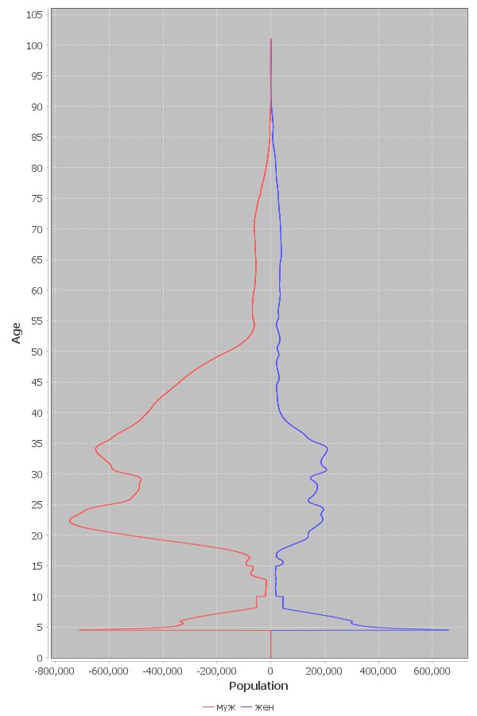
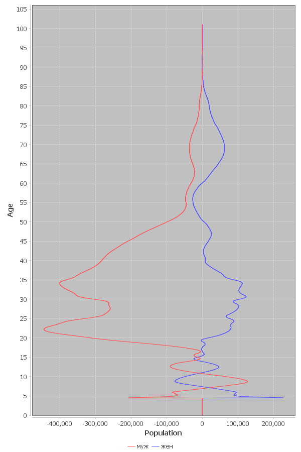
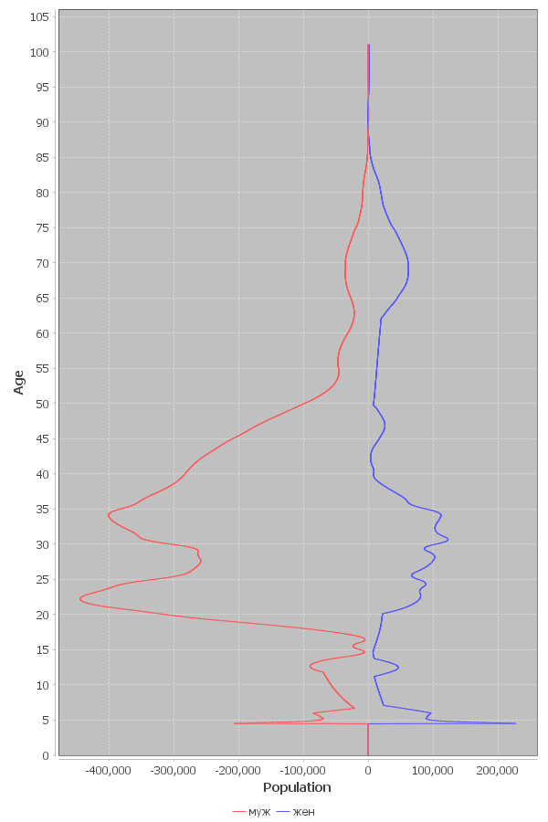
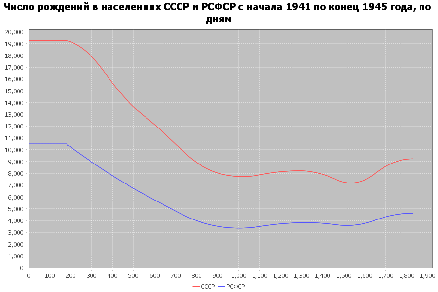

С.П. Обогуев
Смертность и рождаемость
населения СССР и РСФСР в 1941-1945 годах
Согласно подсчётам специалистов Росстата, демографические потери
СССР в Великой отечественной войне составили непосредственно за
период 1941-1945 гг. 39.3 млн. чел., слагаясь из:
- сверхсмертности наличного на начало войны населения объёмом в
25.5 млн. чел.
- прироста смертности рождённых уже во время войны в 1.3 млн.
чел.
- что составляет людские потери в 26.6 млн. чел.
- и подавления рождаемости объемом в 12.5 млн. чел.
- эмиграция не включена в эти потери и составляет дополнительные
0.6 млн. чел. прилагаемые уже после начала 1946 года
Чистая убыль населения, не считая эмиграцию, составила 12.7%.
Эти величины сверхсмертности и дефицита рождений исчислены
разностным образом между фактическим населением на начало 1946 года
(по реконструкции отправляющейся обратным отсчётом от переписи 1959
года) и гипотетическим населением на начало 1946 года в
контрфактической ситуации, при которой показатели рождаемости и
смертности 1940 года оставались бы неизмеными на протяжении
1941-1945 годов.
Точность исчисления ограничивается погрешностями сведений о
населении с обеих сторон временного промежутка 1941-1945 гг.
Величины погрешностей обсуждаются АДХ в статье 1995 года. Основная
часть погрешности связана с фальсификациями при переписи 1939 года и
сильной неполнотой учёта смерности в 1930-х гг.
«Расчет населения на конец 1945 г. в принципе сложнее,
чем на середину 1941 г. – слишком большой период [до переписи 1959
года]. Однако более высокое качество данных делает его возможным.
Когда расчет был закончен, а его итоги опубликованы, мы обнаружили
в архивах результаты статистической разработки, выполненной ЦСУ
СССР, списков избирателей по выборам в Верховный Совет СССР,
Верховные Советы республик и местные советы в феврале 1946 г., в
феврале и декабре 1947 г., в марте 1950 и марте 1954 годов.
Сравнительный анализ данных о числе избирателей и результатов
наших расчетов по возрастам позволят утверждать, что они
достаточно хорошо согласуются (табл. 2)».
(АДХ-1995, стр. 40)
Бо́льшая погрешность возникает при очистке переписи 1939 года от
фальсификаций, обсуждаемых в статье:
«Слишком трудно очистить перепись 1939 г. от всех
“поправок”, легко допустить, что кроме централизованных
фальсификаций к данным переписи приложили руку специалисты на
местах. Столь же трудно оценить сколько умерших в лагерях прошло
мимо статистики.
Мы склонны думать, что скорее завысили, чем занизили оценку
потерь. Именно поэтому мы сделали альтернативный вариант расчета,
приняв более жесткие гипотезы о точности переписи 1939 г. В этом
случае численность населения на середину 1941 г. оказалась бы
равной не 196.7 , а 196.1 млн., а людские потери [...] – 26.0 млн.
человек».
(АДХ-1995, стр. 42)
Возможный размах людских потерь населения СССР, таким образом,
варьируется от 26.0 до 26.6 млн. чел.
Федеральная служба государственной
статистики, "Великая отечественная война : юбилейный
статистический сборник", М. 2015, стр. 24, 32;
Федеральная служба государственной статистики,
"Великая отечественная война : юбилейный статистический
сборник", М. 2020, стр. 26-27;
Е.М.Андреев, Л.Е.Дарский, Т.Л. Харькова,
"Население Советского Союза : 1922-1991", РАН, научный совет
"Проблемы демографии и трудовых ресурсов", М. : Наука, 1993,
стр. 75-77 [далее – АДХ-СССР];
Е.М.Андреев, Л.Е.Дарский, Т.Л. Харькова,
"Демографическая история России : 1927-1959", НИИ статистики
Госкомстата России, Отделение демографии, М. 1998, стр. 139-140
[далее –
АДХ-РСФСР];
Е. Андреев, Л. Дарский, Т. Харькова, "Оценка
людских потерь в период Великой Отечественной войны" // Вестник
Статистики, 1990 №10, стр. 25-27;
Е.М. Андреев, Л.Е. Дарский, Т.Л. Харькова, "Людские потери СССР
во Второй мировой войне : методика оценки и результаты" //
"Людские потери СССР в период второй мировой войны", ИРИ РАН,
Гос. архивная служба РФ, С.-Пб, 1995, стр. 36-42 [здесь и далее – АДХ-1995].
О других оценках см. "Демографическая
модернизация России, 1900–2000" (ред. А. Вишневский), М. : Новое
издательство, 2006, стр. 439-441 и В.А. Исупов, "Демографические катастрофы и кризисы в
России в первой половине XX века : Историко-демографические
очерки", Институт истории СО РАН, Новосибирск, 2000, стр.
184-185, 195.
Примечательно, что русский социолог Н.С. Тимашев
ещё в 1948 г. выводил оценки демографических потерь СССР в войне
(общие потери: 37.5 млн. чел, включая прямые людские потери 26.6
[в т.ч. эмиграция 1.3 млн. чел.] и дефицит рождений 10.9 млн.
чел.) близкие к тем, которые были получены позднесоветскими и
послесоветскими исследователями более 40 лет спустя (N.S.
Timasheff, "The postwar population of the Soviet Union" // The
American Journal of Sociology, 1948, т. 54 № 2 (сентябрь 1948),
стр. 155).
* * *
Общие демографические потери населения на территории отдельно РСФСР
(а не всего СССР) по расчётам Росстата за 1941-1945 гг. составили
19.8 млн. чел, а уменьшение численности населения в границах
РСФСР середины 1941 года (до вхождения Тувы) – 13.6 млн. чел.
Благодаря присоединению Тувы численность населения РСФСР чуть
возросла, и общее уменьшение численности населения РСФСР составило
13.4 млн. чел. Из-за того, что миграция в РСФСР из других районов
СССР продолжалась во время войны, чистая убыль населения РСФСР
оказалась чуть меньше, чем в среднем по СССР – 12.3%. Неизвестность
точных величин миграции делает невозможным жёсткое определение
размера людских потерь населения РСФСР методом демографического
баланса.
* * *
Приведённые числа описывают суммарные избыточные демографические
потери СССР за указанный период от всех причин – как непосредственно
от войны, так и от советских политик по отношению к населению во
время неё.
Располагая этими оценками общих потерь за пятилетие, мы однако не
имеем хотя бы самой примерной оценки погодовых показателей
рождаемости и смертности населения СССР и РСФСР за 1941-1945 годы в
виде промилле. Этот пробел, не позволяющий построить непрерывный
погодовой историко-демографический ряд показателей движения
населения за длительный период (как то, за 1896-2024 гг.), мы и
попытаемся восполнить.
Наш расчёт опирается на элементы демографических данных полученных
реконструкциями АДХ-СССР и АДХ-РСФСР и является производным от них.
При том, что общие объёмы потерь более или менее известны (мы
добавляем к ним лишь второстепенные уточнения), задача состоит в
установлении в основном разбивки различных категорий потерь
по времени и определении движения внутри периода 1941-1945.
Имеющиеся реконструкции населения СССР и РСФСР доходят с одной
стороны от 1920-х гг. до середины 1941 года1, а с другой
стороны от 1959 до конца 1945 года2, но промежуток между
серединой 1941 года и концом 1945 года остаётся "чёрным ящиком" – к
которому мы здесь и попытаемся приложить увеличительное стекло.
1 Двигаясь к нему от переписей СССР 1926,
1937 и 1939 гг. и также польской переписи 1931 года для сведений о
населении присоединённых в 1939 году территорий западной
Белоруссии и западной Украины, румынской переписи 1930 г. для
Северной Буковины и Бессарабии, переписи Литвы 1923 года, переписи
Латвии 1935 г., переписи Эстонии 1934 г., с дополнительными
данными о естественном движении населения по присоединённым в
1939-1940 гг. территориям и о числе избирателей участвовавших в
выборах.
2 Двигаясь к нему обратным отсчётом от переписи 1959
года и текущего учёта рождений и смертей с поправками на недоучёт.
Отсутствие множества прямых элементов данных за 1941-1945 годы
заведомо не позволяет провести для этого периода реконструкцию
погодового движения населения с высокой точностью, поэтому речь
пойдёт об определении величин движения лишь в примерном виде,
позволяющем произвести стыковку между началом/cерединой 1941 и
концом 1945 года, при чём распределение уровней рождаемости и
смертности на отдельные годы и полугодия пятилетия обладало бы общей
степенью правдоподобия и соотнесения с действительностью. Для этого
нам придётся сделать известное число правдоподобных, но произвольных
и примерных предположений о временно́́м
распределении смертей – предположений, замещающих нехватку прямых
сведений.
Как мы однако увидим, результат исчислений остаётся стабильным и
малоизменным в широком значении параметров модели временно́го и
категориального распределения потерь.
* * *
Для целей нашего расчёта, речь пойдёт только о непосредственных
потерях за 4 года войны относительно непосредственно
предвоенного же уровня рождаемости и смертности. Однако война
имела последствия простирающиеся не только на многие десятилетия
после неё, но и наступившие уже прежде неё. Рождаемость в
СССР и РСФСР в 1940 году резко сократилась, при этом в РСФСР первые
признаки сокращения проявились уже в 1939 году.
АДХ отмечают это обстоятельство, не комментируя его специально
(АДХ-СССР, стр. 120, АДХ-РСФСР, стр. 164):
|
рождаемость
|
год
|
СССР |
РСФСР |
| промилле |
% от
1937 |
промилле |
% от
1937 |
| 1937 |
39.9 |
100.0 |
41.5 |
100.0 |
| 1938 |
39.0 |
97.7 |
40.9 |
98.6 |
| 1939 |
40.0 |
100.3 |
39.8 |
95.9 |
| 1940 |
36.1 |
90.5 |
34.6 |
83.4 |
Расчёт Бирабена также показывает резко уменьшившееся в 1940 число
рождений:
| год |
число
рождений
на территории
СССР-1975
|
| тыс. |
% от
1937 |
| 1937 |
7,150 |
100.0 |
| 1938 |
7,070 |
98.9 |
| 1939 |
7,015 |
98.1 |
| 1940 |
6,095 |
85.2 |
J.-N. Biraben, "Naissances et
répartition par âge dans l’Empire russe et en Union Soviétique"
// Population, т. 31 (1976), №2, стр. 455.
Э. Коул, Б. Андерсон и Э. Харм в капитальном труде о динамике
рождаемости в России тоже отмечают резкое падение брачной
плодовитости в 1939-1940 годах:
| год |
брачная
плодовитость
населения
европейской части России
|
в
нормировке
на гуттеритскую
плодовитость
|
% от
1937 |
| 1937 |
0.542 |
100.0 |
| 1938 |
0.521 |
96.1 |
| 1939 |
0.505 |
93.2 |
| 1940 |
0.430 |
79.3 |
A. Coale, B. Anderson, E. Härm, "Human
Fertility in Russia Since the Nineteenth Century", Princeton
University Press, 1979, стр. 16.
Снижение отчасти обусловлено долгосрочным фактором: в детородный
возраст 20-25 вступили ослабленные войнами когорты 1915-1920 гг.
рождения. Однако долгосрочные факторы, проявляющиеся постепенно и
медленно, могут быть ответственны лишь за малую часть столь крутого
и внезапного снижения. Коул и Андерсон указывают на основную причину
обвала рождаемости в СССР 1939-1940 годов:
«Брачная плодовитость в европейской части России резко
упала с 1939 по 1940 год. Почти треть общего изменения
плодовитости с 1925-1927 гг. приходится на один этот год. Может
показаться, что это падение отражает начало влияния Второй мировой
войны на русскую рождаемость, однако значительные военные потери и
разрушительное влияние немецкого вторжения и оккупации начались не
раньше середины 1941 года, а их основные последствия проявились –
из-за задержки между зачатием и рождением – в 1942 году и позже.
Сокращение рождаемости в 1940 году подразумевает сокращение числа
зачатий произошедшее главным образом в 1939 году. В этом году
советская армия вторглась в Польшу, а также участвовала в первых
сражениях войны в Финляндии. Можно заключить, что обстоятельства
этих военных действий – мобилизация войск, нарушение жизни
приграничных областей переселением населения на вновь
присоединённые территории, и насильственное переселение поляков и
белорусов-католиков – явились причиной особенно резкого падения
рождаемости с 1939 по 1940 год». (Coale и др., стр. 18-19)
В этом перечислении причин обвала рождаемости Коул с соавторами
упускают решающий фактор – резкое снижение уровня жизни
подсоветского населения в 1939 и 1940 годах из-за подготовки к
большой войне, мыслившейся тогда советским руководством не как
оборонительная, а как поход РККА в страны центральной и западной
Европы для установления в них большевицкого строя. В 1939-1940 гг.
продовольственное снабжение в городах центральной России упало почти
что до будущих норм блокадного Ленинграда (так, в Воронеже в
предвоенный период нормы снабжения снизились с 400 до 200 грамм
хлеба на жителя в день, причём иногда даже этого хлеба не было), при
этом принудительная трудовая нагрузка и трудоизъятие возросли.
В.Ю. Рылов, "За и против. Власть и
общество в Воронежской области в начале второй мировой войны
(1939-1941)", Воронеж : Издательский дом ВГУ, 2018, стр. 90-91,
94, 151-152, 171-172, 244-251;
Д. Дьяков, "На свою голову : Воронеж и 1939 год : Документальное
повествование", Воронеж : Издательский дом ВГУ, 2016, стр. 35;
Д. Дьяков, "Прыжок в бездну : как Воронеж вступил во Вторую
мировую войну" // Воронежский курьер, 19 января 2010, стр. 4.
Одновременно с падением рождаемости пошла на повышение младенческая
смертность (АДХ-СССР, стр. 135, АДХ-РСФСР, стр. 164):
| год |
младенческая
смертность
(промилле) |
| СССР |
РСФСР |
| 1938 |
174 |
209 |
| 1939 |
168 |
213 |
| 1940 |
184 |
216 |
Общая смертность населения в СССР между 1939 и 1940 гг. выросла с
20.1 до 21.7 промилле (на 8%), естественный прирост населения
снизился с 20.0 до 14.4 промилле, или в 1.4 раза (АДХ-СССР, стр.
120). Чистый коэффициент воспроизводства населения РСФСР в 1940 году
упал на 14% (в 1.16 раз) сравнительно с 1938 годом (АДХ-РСФСР, стр.
164).
Декомпозиция возрастной численности населения СССР и РСФСР по
переписи 15 января 1959 года показывает, что наиболее глубокий
четырёхлетний по ширине провал в числе рождений разверзся не 9
или более месяцев спустя после начала войны, т.е. после начальных
мобилизаций плюс срок беременностей, как инстинктивно можно было
ожидать на первый взгляд, а много ранее, за 8 или более месяцев до
того провала рождаемости, который был бы вызван только войной
1941-1945 годов. Наиболее глубокий 4-летний по ширине провал зачатий
настал не после войны, а с октября-ноября 1940 года или ранее.
Осуществившийся провал является итогом наложения двух военных волн:
войны 1941-1945 гг. и предшествующих войн 1939-1940 гг., а также
подготовки к войне 1941 года в 1939-1940 годах.
Опубликованные итоги переписи 1959 года
приводят возрастной состав населения с разбивкой только по
пятилетиям возраста, а половозрастной состав – по десятилетиям
(ЦСУ СССР, "Итоги Всесоюзной переписи населения 1959 года :
РСФСР", М. : Госстатиздат, 1963, стр. 59-61, 102-103; то же и
для населения СССР в сводном томе, стр. 50-72), однако
хранящаяся ныне в РГАЭ разработка переписи (ф.1562 оп. 336
д.1590-1594) содержит разбивку по отдельным годам возраста.
Погодовая возрастная разбивка опубликована на Демоскопе:
https://demoscope.ru/weekly/ssp/sng_mar_59.php?reg=1&gor=3&Submit=OK;
https://www.demoscope.ru/weekly/ssp/sng_edu_59.php?reg=2;
https://www.demoscope.ru/weekly/ssp/rus_mar_59.php;
https://www.demoscope.ru/weekly/ssp/rus_edu_59.php
Её обработка (программой
rtss.ww2losses.BirthTrough) показывает, что наиболее
глубокий 4-летний по ширине минимум числа рождений в годы около
1941-1945 наступает с полного возраста 16.92 лет (СССР) или
16.98 лет (РСФСР) на дату проведения переписи (15 января 1959
года), что соответствует рождениям в период 17.2.1941 – 17.2.1942 (СССР) или
26.1.1941 – 26.1.1942 (РСФСР), и
сответственно зачатиям в период 23.5.1940 – 23.5.1941 (СССР) или
1.5.1940 – 1.5.1941 (РСФСР), со средними датами промежутков
зачатий соответственно 22.11.1940 (СССР) и 31.10.1940 (РСФСР).
Таким образом, разностный расчёт потерь войны основанный на отсчёте
дефицита рождений в 1941-1945 гг. сопоставительно с уровнем
рождаемости 1940 года является сущностно заниженным, т.к. военные
потери уже отчасти факторизованы в спад рождаемости 1940 года.
Избрание в качестве опорной точки 1940 года, отражающего "норму"
сформированную демоцидальными политиками советского строя до 1941
года, подразумевает расчёт дальнейшего демографического ущерба
относительно точки отсчёта этой уже демоцидальной "нормы". Однако
это не влияет на нашу цель исчисления абсолютных значений
показателей рождаемости и смертности для 1941-1945 гг.
* * *
Мы проводим раздельный расчёт для каждой из
двух территорий (СССР и РСФСР), но выполняемый по в основном
общей схеме. Для случая РСФСР требуются дополнительные шаги
связанные с влиянием межреспубликанской миграции. Прежде чем
погрузиться в подробности, обрисуем эту схему в общих чертах.
Она состоит из двух полунезависимых частей. Первая часть
исследует демографическую участь населения наличного на середину
1941 года, вторая часть обращается к населению родившемуся после
середины 1941 года.
Шаги для первой части, исследующей демографическую судьбу
наличного на середину 1941 года населения:
- Построить таблицу половозрастных коэффициентов смертности
для 1940 года.
- Установить половозрастную структуру населения на середину
1941 года и на конец 1945 года (= начало 1946 года).
- Построить прогноз населения при гипотетическом условии
сохранения мира в 1941-1945 годах. Прогноз строится в виде
оценки половозрастной структуры населения для промежуточных
временны́х точек между серединой 1941 и концом 1945 года, с
полугодовым шагом. Для начала и конца каждого полугодия мы
исчисляем прогноз двух структур:
- Населения c нормальными рождениями, в предположении
сохранения в 1941-1945 гг. уровня рождаемости 1940 года.
- Только наличного на середину 1941 года населения при
сохранении мирного уровня смертности, но без рождаемости.
Этот прогноз позволяет нам исчислять для каждого полугодия
ожидаемое в условиях мира число смертей в только уже
наличном на середину 1941 населении, без добавления
рождений после середины 1941 года.
- При построении прогноза мы принимаем в учёт влияние
оказанное в 1942-1945 гг. сульфаниламидными препаратами и
антибиотиками на резкое снижение младенческой и раннедетской
смертности.
- Разница между прогнозом (2) на начало 1946 года и
фактической половозрастной структурой на начало 1946 года
(по реконструкции АДХ) указывает половозрастную структуру
вызванного войной демографического дефицита накопленного к
концу 1945 года в наличном на начало войны населении, за
период с середины 1941 по конец 1945 года.
- Если бы используемая для расчёта половозрастная
структура начала 1946 года не охватывала эмиграцию второй
волны, то для определения половозрастной структуры
сверхсмертности накопленной к концу 1945 года в наличном
на начало войны населении следовало бы дополнительно
вычесть эмиграцию из демографического дефицита (избыточные
смерти = дефицит – эмиграция). Однако поскольку
используемая нами половозрастная структура на начало 1946
года ещё содержит будущих эмигрантов (реконструкция АДХ
исключает их лишь начиная с 1947 года), то накопленная
сверхсмертность совпадает с дефицитом.
- Эта начальная оценка накопленной сверхсмертности,
обозначаемая демографическим дефицитом на конец войны, не
равна числу избыточных смертей, а ниже его. Чтобы понять,
почему это так, представим условно, для иллюстративного
пояснительного примера, что в период 1941-1945 гг. люди
избыточно гибли только в 1942 году, а в остальные годы
(1943-1945) смертность сохраняла обычное мирное значение.
В таком случае население к концу 1942 года и в последующие
годы снизилось бы сравнительно со случаем мирного 1942
года (из-за добавочного в этом году числа смертей), и
поэтому даже при неизменном сохранении мирного уровня
смертности в 1943-1945 гг. снизилось бы также число
смертей в этих годах. Если бы мы взяли дефицит населения
измеренный на конец 1945 года, наивно отнесли его как
избыточное число смертей в 1942 году и пересчитали
демографическую динамику с 1941 по 1945 год с учётом этой
добавки смертей, то получили бы на конец 1945 года меньший
дефицит, чем наблюдался в действительности. Избыточные
смерти в 1942 году ведут к снижению населения на конец
1942 года и сооветственно пропорциональному снижению числа
"нормальных" смертей (по мирному уровню смертности) в
1943-1945 гг. Введение относительного избытка
смертей в 1942 году порождает их относительный недостаток
в 1943-1945 гг., частично уравновешивающий избыток 1942
года и ведущий к суммарному дефициту населения на конец
1945 года меньшему, чем избыток смертей в 1942 году. Это
означает, что фактически произошедшее в 1942 году число
избыточных смертей больше, чем величина дефицита населения
на конец 1945 года. Чтобы получить заданную величину
дефицита населения в конце 1945 года, следует приложить к
1942 году избыточное число смертей не равное дефициту на
конец 1945 года, а большее. Если действительное число
избыточных смертей в 1942 году обозначить как ИС42,
дефицит в конце 1945 года как Д45, а долю людей
умирающих на протяжении 1943-1945 гг. (сравнительно с
населением на начало 1943 года) как β, то ИС42
≈ Д45 / (1 – β). Превышение числа избыточных
смертей над дефицитом на конец 1945 года тем больше, чем
выше мирная сверхсмертность данной группы; для возрастных
коэффициентов смертности характерных для рубежа 1930-40-х
гг. оно будет высоким для малолетних детей (в возрасте 0-2
и в меньшей степени 3-5 лет) и для стариков старше 60-65
лет, и не очень значительным в возрастах 5-60 лет.
- Дополнительно, разница между фактической половозрастной
структурой начала 1946 года и прогнозом (1) на начало 1946
года, изолированная для возрастов 0 – 4.5 лет, укажет
накопленный дефицит населения рождённого во время войны.
- Расщепив половозрастную структуру населения середины 1941
года на тонкие половозрастные слои (половозрастные линии)
толщиной в 1 день по возрасту, для каждой из линий мы
совершаем две передвижки от середины 1941 до конца 1945
года, по полугодиям, т.е. по девяти промежуткам полугодовой
длительности:
- Первая передвижка совершается по таблицам смертности
мирных условий и устанавливает, какую численность эта
линия имела бы в каждый из промежуточных моментов и в
конце 1945 года при условии сохранении мира. Разница с
фактической численностью линии в конце 1945 года указывает
итоговые потери, понесённые населением этой линии из-за
войны (дефицит населения этой линии на конец войны).
- Вторая передвижка распределяет вычисленные ранее военные
потери линии по полугодиям в соответствии с моделью
распределения избыточной смертности, описываемой далее.
Распределение осуществляется таким образом, что начало
линии (её численность на середину 1941 года) соединятся с
её концом (численностью в конце 1945 года).
- В результате мы получаем половозрастную структуру
наличного на середину 1941 года населения (остатка от
населения середины 1941 года) для каждого из последующих
промежуточных полугодий до конца 1945 года, а также
половозрастную структуру избыточных смертей этого
населения в каждом промежуточном полугодии.
Шаги для второй части, исследующей демографическую судьбу
родившихся после середины 1941 года:
- Располагая половозрастной структурой остатка от населения
наличного на середину 1941 года для каждого из последующих
полугодий между серединой 1941 и концом 1945 года, мы
определяем численность и возрастную структуру женщин
фертильного возраста для начала и для конца каждого
полугодия, а также среднюю за полугодие структуру
детородного женского населения. Отсюда мы вычисляем число
фактических рождений в каждом полугодии, используя
возрастные коэффциенты плодовитости данного года по
анамнестическому опросу 1960 года.
- Применяя таблицы смертности мирного времени, мы
определяем, какое число детей фактически родившихся с
середины 1941 по конец 1945 года дожили бы до конца 1945
года, если бы младенческая и раннедетская смертность в это
время имела величину мирного времени. Сравнение результата с
фактически наличным количеством детей в возрастах 0 – 4.5
лет на конец 1945 года устанавливает объём избыточных
смертей родившихся во время войны по причине повышения
младенческой и раннедетской смертности из-за военных
условий.
- Опираясь на сведения о динамике младенческой смертности в
годы войны, мы распределяем это общее количество избыточных
смертей родившихся во время войны по полугодиям. В
результате мы получаем уровни детской смертности для каждого
полугодия и можем пересчитать таблицы детской смертности,
которые должны им удовлетворять. Передвижка рождаемых от
полугодия к полугодию даёт для каждого полугодия
половозрастную структуру остатка населения родившегося после
середины 1941 года, число и половозрастную структуру
фактических смертей этого нового населения и (разностно с
передвижкой полугодия по таблице мирного времени) число и
половозрастную структуру избыточных детских смертей в новом
(родившемся после 1941 года) населении.
В результате,
- Мы получаем для каждого полугодия:
- Совокупную половозрастную структуру (и численность)
населения на начало и на конец полугодия и, следовательно,
среднюю за полугодие численность населения, включая обе
его части: наличную на середину 1941 года и рождённую
после середины 1941 года.
- Фактическое число и половозрастную структуру смертей в
полугодии, для обеих частей населения.
- Ожидаемое в условиях мира количество и половозрастную
структуру смертей в полугодии.
- Число (и половозрастную структуру) избыточных смертей за
текущее полугодие.
- Фактическое число рождений в полугодии.
- С учётом средней за полугодие численности населения,
величины числа рождений и смертей указывают рождаемость и
смертность (в промилле) для данного полугодия.
- Сведения о полугодиях комбинируются в сведения о годах, и
величины рождаемости и смертности (в промилле) исчисляются
также для календарных лет.
- Дополнительно, мы определяем число несостоявшихся
рождений.
Перейдём к расчёту.
* * *
Прежде всего, установим численность и половозрастную структуру
населения на середину 1941 года, т.е на момент начала войны.
Мы можем вычислить её двумя способами.
Первый вариант основан на передвижке от переписи 1939 года, с
предварительным внесением в результаты оной необходимых поправок
для очистки от фальсификаций.
Второй вариант – на передвижке от численности и половозрастной
структуры населения расчитанной Андреевым, Дарским и Харьковой
(далее – АДХ) на начало 1941 года. (АДХ приводят результаты
расчёта сгруппированными по 5-летним возрастным группам; мы
распаковываем их в погодовые величины посредством сплайна
сохраняющего суммарные значения для 5-летних групп). Мы применяем
этот вариант в качестве основного, для лучшего разностного
согласования с данными о населении на 1 января 1946, имеющимися
только по исчислению АДХ.
Для передвижки от начала до середины 1941 года используется та же
таблица смертности, что и вычисляемая для 1940 года.
Таблица смертности на 1940 год для случая СССР:
АДХ не опубликовали вычисленные и использованные ими
для СССР возрастные показатели смертности, в т.ч. для 1940
года. Насколько можно судить, для взрослых возрастов они
полагали их близкими по распределению (т.е. по общей форме
кривой, но не по точным значениям) к ЦСУ-шной/госкомстатовской
таблице смертности для 1938-1939 гг. ("Таблицы смертности и
ожидаемой продолжительности жизни населения", М. :
Государственный комитет СССР по статистике, 1989, стр. 33-50):
"Расчет возрастных чисел умерших проводился в
несколько этапов путем передвижки населения 1939 г. с
использованием модифицированных таблиц смертности 1938-1939
гг., так, чтобы при данных числах живущих в каждом возрасте
они давали заданное общее число умерших... При модификации
таблиц смертности 1938-1939 гг. мы воспользовались
независимыми оценками уровня младенческой смертности,
рассчитанными нами по данным о младенческой смертности на
территориях с хорошей регистрацией". (АДХ-СССР, стр. 54-55).
Для 1940 г. этот уровень младенческой смертности (q0) полагается
равным 184.0 промилле (АДХ-СССР, стр. 135) против 163.5 по
таблице ЦСУ/Госкомстата для 1938-1939.
Общий уровень смертности населения в 1940 году возрос
сравнительно с 1938 годом (по АДХ, с 20.9 до 21.7 промилле) при
одновременном снижении уровня рождаемости (с 39.0 до 36.1
промилле), что означает ещё более высокий прирост возрастных
коэфициентов смертности, чем подразумевается одним лишь
возрастанием уровня смертности, т.к. число смертей
распределилось из-за падения рождаемости на сравнительно меньшее
население подверженное смертности (exposed population), чем было
бы при прежнем уровне рождаемости. При возрастных коэффициентах
смертности существовавших в 1930-1940-х гг. значительная доля
смертей приходилось на новорожденное в текущем году население.
Сокращение числа рождений при одновременном повышении общего
числа смертей в населении означает, что число смертей во
взрослом населении выросло сильнее, чем указывается одним только
ростом общей смертности. Кроме того, таблица Госкомстата
построена на основе данных текущего учёта смертности,
отличавшегося значительной степенью недоучёта смертей (АДХ-СССР,
стр. 44). Наш предышествующий анализ таблицы смертности ЦСУ /
Госкомстата СССР 1938-1939 гг. (С.П. Обогуев, "Надёжна
ли
таблица смертности ЦСУ / Госкомстата СССР для населения СССР
1938-1939 годов?") установил, что для соответствия разнице
населения по переписям 1937 и 1939 годов, а также для
соответствия реконструкции АДХ, возрастные коэффициенты взрослой
смертности таблицы ЦСУ должны быть повышены в 1.4-1.5 раз.
Соответственно этому, мы строим таблицу возрастных коэффициентов
смертности для 1940 года отправляясь от госкомстатовской таблицы
1938-1939 гг. и видоизменяя её следующим образом:
- Младенческая смертность (q0 для взвешенного среднего обоих
полов) повышается до 184 промилле, пропорциональные
повышения делаются также в таблицах для отдельных полов.
- Смертность в возрастах 1-4 лет повышается на множитель
линейно спадающий с возрастом от величины 184.0/163.5 (=
1.125) в возрасте 1 год до 1.0 в возрасте 5 лет.
- Возрастные коэффциенты смертности в возрастах 5-100 лет
повышаются на одинаковый множитель, при котором полученная
таблица даёт годовую смертность в 21.7 промилле при
рождаемости 36.1 промилле (с учётом смертности рождённых в
текущем году), т.е. соответствует показателям естественного
движения по реконструкции АДХ. Этот множитель исчислим как
1.438, его величина находится в соответствии с ранее
установленной величиной недоучёта смертей текущей
статистикой, на которой построена таблица.
Таблица смертности на 1940 год для случая РСФСР:
Основана на возрастных коэффициентах смертности РСФСР
для 1940 года расчитаннных АДХ (АДХ-РСФСР, стр. 167-170). Для
получения требуемой смертности при данной рождаемости, нам
приходится слегка повысить возрастные коэффициенты смертности
(для всех возрастов равномерно) на множитель 1.007 сравнительно
с расчитанными АДХ. Различие может быть обусловлено
расхождениями вызванными дезагрегацией значений возрастных
коэффициентов смертности и половозрастной структуры населения
(см. ниже).
Возрастные коэффициенты смертности РСФСР-1940
расчитаннные АДХ приводятся в АДХ-РСФСР, стр. 167-170, но только
агрегировано для возрастных групп (0 лет, 1-4 года, далее для
пятилетних групп и затем для группы 85-100 лет). Мы
распаковываем их в годовые величины посредством метода PCLM
(Rizzi, "Efficient Estimation of Smooth Distributions From
Coarsely Grouped Data", 2015), предварительно внося некоторые
исправления:
Данные АДХ для возрастных коэффициентов смертности
часто содержат слишком низкую смертность в группе 85-100
сравнительно с группой 80-84. Это видно по ходу кривой закона
Хелигмана-Полларда (с коэффицентами подобранными под данные
АДХ) в двух последних диапазонах (80-84-100), а также по
завороту кривой PCLM в тех же диапазонах. Вместо ожидаемого
ускоряющегося роста смертности с возрастом, строимые по данным
АДХ кривые показывают в старших возрастах неизменный или
замедляющийся рост смертности.
Кроме того, для некоторых лет (РСФСР 1927-1933, 1937,
1946-1948) рассчитанная АДХ мужская смертность в возрастной
группе 85-100 вообще ниже, чем в группе 80-84. Это не только
представляется невозможным фактически, но и вызывает резкий
перегиб и немонотонное поведение строимой кривой смертности в
этом возрастном диапазоне. Для некоторых других лет смертность
в группе 85-100 хотя и не ниже, чем для группы 80-84, но
едва-едва выше её, что также малореалистично и также вызывает
резкий изгиб кривой смертности на горизонталь, вместо её
плавного подъёма.
Мы корректируем исчисленные АДХ значения смертности в этих
двух группах таким образом, чтобы общее число смертей в них
осталось неизменным, при данной половозрастной структуре
населения. Мы понижаем значение смертности в возрасте 80-84 и
повышаем её для возраста 85-100 так, чтобы смертность в группе
85-100 была выше, чем в группе 80-84, однако суммарное число
смертей в возрастах 80-100 оставалось неизменным. Мы также
пытаемся исправить значения смертности для групп 80-84 и
85-100 таким образом, чтобы шло плавное последовательное
нарастание сравнительно с группой 75-79.
Половозрастная структура населения принимается нами по АДХ
(АДХ-СССР, стр. 125-126; АДХ-РСФСР, стр. 157-160), однако АДХ
приводят значения агрегированные по возрастным 5-летним группам (а
также группе 85-100 лет). Мы распаковываем их в погодовые значения
посредством итеративного алгоритма сохраняющего сводные значения
для групп агрегации.
Дезагрегация неизбежно вносит отклонения сравнительно с
до-агрегированными значениями, однако исходные до-агрегированные
значения возрастной структуры населения и возрастных коэффициентов
смертности по расчётам АДХ, к сожалению, недоступны. Хотя все
расчеты АДХ для СССР и для России выполнялись с шагом 1 год по
времени и по возрасту, однако рабочие материалы расчетов АДХ по
СССР не сохранились. Одногодовые по возрасту динамические ряды для
России существуют, однако авторы проекта АДХ твердо решили не
публиковать ничего сверх ранее опубликованного, поэтому и для
РСФСР в качестве входных сведений нам доступны лишь опубликованные
АДХ агрегированные значения, которые мы распаковываем для
использования.
* * *
Установив половозрастную структуру населения на середину 1941 года и
таблицу смертности для 1940 года, мы затем строим прогноз населения
до начала 1946 года в контрфактических условиях сохранения мира, с
полугодовым шагом.
Разбив временной промежуток с середины 1941 по начало 1946 года на
полугодовые отрезки, мы делаем последовательную пошаговую передвижку
населения от начальной точки (середины 1941) по конечную точку
(начало 1946) по таблице смертности мирного времени (соответствующей
взрослой смертности 1940 года, а детской смертности прогрессивно
падающей из-за введения антибиотиков, см. ниже) и уровню рождаемости
1940 года, исчисляя прогноз динамики населения в 1941-1945 гг. в
контрфактическом случае отсуствия войны, с шагом по полгода.
Результат этих исчислений будет затем использован нами как базис для
разностной калькуляции военных потерь, посредством сравнения
прогноза населения с фактическим населением в начале 1946 года по
реконструкции АДХ (вычисленной обратным отсчётом от переписи 1959
года).
Всего в интервале с середины 1941 по начало 1946 года имеются 9
полугодовых отрезков передвижки, общей длительностью 4.5 года. Для
каждой из промежуточных точек (начала и середины 1942, 1943, 1944 и
1945 годов) мы вычисляем прогноз численности и половозрастной
структуры ожидаемого населения в контрфактическом случае отсутствия
войны, т.е. в случае сохранения мирных условий отражаемых таблицей
смертности 1940 года (с дополнительными поправками на антибиотики) и
уровнем рождаемости 1940 года.
- Передвижка выполняется в двух вариантах:
- с учётом рождений после середины 1941 года (по общему уровню
рождаемости равному рождаемости в 1940 году, т.е. CBR =
CBR_1940);
- и без учёта новых рождений после середины 1941 (CBR = 0).
Первый вариант отслеживает суммарное население –
наличное на середину 1941 года плюс рождённое после середины 1941
года – каковым оно было бы в гипотетических условиях мира.
Второй вариант отслеживает движение только наличного на середину
1941 года населения (без добавляемых рождений периода после
середины 1941 года).
Разница между вариантами даёт прогностически ожидаемое
новорожденное после середины 1941 года население, выжившее с
рождения и до текущего момента (т.е. за вычетом унесённого
младенческой и раннедетской смертностью).
Напомним ещё раз, что передвижка делается для контрфактического
случая отсутствия войны и устанавливает ожидаемую динамику
населения в контрфактических условиях сохранения мира в 1941-1945
годах. Относительно этой ожидаемой в условиях мира динамики мы
затем будем разностным образом исчислять потери принесённые
военным временем.
При передвижке мы, в частности, записываем для каждого полугодия
ожидаемое в условиях мира число смертей на протяжении этого
полугодия в начальном (наличном на середину 1941 года, без учёта
добавочных после этого рождений) населении.
- Для 1941 года мы применяем ту же таблицу смертности, что была
исчислена для 1940 года.
- После начала применения в 1940-х гг. сульфаниламидных
препаратов (стрептоцида и сульфидина) и антибиотиков,
младенческая и раннедетская смертность выказала первые признаки
снижения в конце 1942 года, а затем резко снижалась в 1943-1946
годах (Сифман; Андреев, 2014, стр. 101). Естественно ожидать,
что при отстутствии войны произошли бы те же медицинские
улучшения, возможно проявившиеся бы даже сильнее и чуть ранее,
поэтому их необходимо учесть при прогнозе ожидаемого в невоенном
случае состава и численности населения на период 1943-1945
годов. Мы располагаем для этого следующими сведениями:
- Сифман (стр. 54) приводит численные сведения о падении
смертности в отдельные месяцы первого года жизни (для всех
12 первых месяцев после рождения) в 1943, 1944 и 1945 годах
относительно 1940 года, отдельно для городского и отдельно
для сельского населения РСФСР. Она, к сожалению, не сообщает
суммарных показателей за весь год жизни, а также показателей
для совокупного (городского и сельского вместе) населения
страны, а также сведений для населения СССР (а не РСФСР).
Важно, что сила снижения смертности (относительно величин
1940 года) повышается от первых месяцев жизни к старшим
месяцам первого года. Падение значительно для всех месяцев
первого года жизни, но в старших месяцах проявляется ещё
сильнее, чем в ранних месяцах. Можно поэтому предполагать,
что снижение раннедетской смертности распространялось также
и на возрасты 1-4, однако мы не располгаем сведениями о
величине этого снижения в возрастах старше первого года
жизни.
- По оценкам АДХ, младенческая смертность в РСФСР снизилась
между 1940 и 1946 с 216 до 124 промилле (АДХ-РСФСР, стр.
140, 164-165),
а в СССР со 184 до 167 (АДХ-СССР, стр. 69, 71, 135).
- По позднейшей оценке Андрева, младенческая смертность в
РСФСР за 1940-1946 годы снизилась с 205 до 94 промилле
(Андреев, 2014, стр. 92-95);
почти те же величины приводит Кваша (2003, стр. 49).
- Фильцер (2018, стр. 215, 325-326, 330-340; 2010, стр. 259,
271-277, 283-293, 328-333) приводит следующую динамику
младенческой смертности в основных тыловых районах РСФСР:
188 (в 1939), 214 (в 1940), 196 (в 1941), 314 (в 1942), 159
(в 1943), 112 (в 1944); для тыловых промышленных районов
РСФСР: 85 (в 1945), 81 (в 1946). Источник сведений в
монографии Фильцера – архивные материалы ЦСУ СССР и
Статистического Управления РСФСР о механическом движении
населения за 1939-1955 гг. Как и с довоенным текущим учётом
взрослых смертей, действительная детская смертность была,
скорее всего, выше учтённой.
Р.И. Сифман, "К вопросу о причинах снижения
детской смертности в годы Великой Отечественной войны" //
"Продолжительность жизни: анализ и моделирование", ред. Е.М.
Андреев и А.Г. Вишневский, М.: Статистика, 1979, стр. 50-60.
Р.Х. Зулкарнеев, Ш.З. Загидуллин, Н.А. Власова,
"Сульфидинотерапия пневмонии в годы Великой Отечественной
войны 1941–1945 гг." // Пульмонология, 2017, 27 (3), стр.
427–430.
Е.А. Кваша, "Младенческая смертность
в России в XX веке" // "Социологические исследования", 2003
№6, стр. 47-55.
А. Авдеев, "Младенческая
смертность и история охраны материнства и детства в России
и СССР" // ред. М. Денисенко и др., "Историческая
демография : Сборник статей", М. 2008 ("Демографические
исследования", Вып. 14) стр. 13-72.
Е.М. Андреев, "Снижение младенческой
смертности в России в 1940-1958 гг." // "Развитие населения
и демографическая политика. Памяти А.Я. Кваши. Сборник
статей" (ред.М.Б. Денисенко, В.В. Елизарова), М.: МАКС
Пресс, 2014. стр. 92-111.
Д. Фильцер, "Опасности городской жизни в СССР
в период позднего сталинизма. Здоровье, гигиена и условия
жизни. 1943-1953", М., Политическая энциклопедия, 2018,
первоизд. Donald Filtzer, "The Hazards of Urban Life in Late
Stalinist Russia : Health, hygiene, and living standards,
1943-1953", Cambridge University Press, 2010.
| год |
младенческая
смертность
в РСФСР
и тыловых районах РСФСР |
| промилле |
относительно
1940 года |
| 1939 |
188 |
0.88 |
| 1940 |
214 |
1.00 |
| 1941 |
196 |
0.92 |
| 1942 |
314 |
1.47 |
| 1943 |
159 |
0.74 |
| 1944 |
112 |
0.52 |
| 1945 |
85 |
0.40 |
| 1946 |
81 |
0.38 |
Мы моделируем снижение младенческой и раннедетской смертности
из-за фармацевтических улучшений 1942-1945 гг. пересчётом для
каждого полугодия (1942-1945 гг.) таблицы смертности для
гипотетических мирных условий. Вместо того, чтобы прилагать для
1941-1945 гг. немодифицированную таблицу смертности 1940 года,
мы пересчитываем для каждого полугодия (1942-1945) таблицу
смертности, отправляясь от начальной таблицы 1940 года и понижая
в ней коэфициент младенческой смертности (q0) на множитель
вытекающий из данных Фильцера. Для 1941-1945 годов мы принимаем
этот множитель равным соответственно (1.0, 0.90, 0.70, 0.45,
0.40), с добавочной интерполяцией на полугодия 1941-1946: (1.0,
1.0), (0.93, 0.87), (0.76, 0.63), (0.48, 0.42), (0.41, 0.39),
(0.38, 0.38). Избранные нами значения множителя чуть ниже, чем
непосредственно следующие из сведений Фильцера, т.к. приводимая
Фильцером фактическая младенческая смертность в 1942-1945 гг.
отражает также влияние военных условий, и в условиях мира в
1941-1945 гг. показатели младенческой смертности в 1942-1945 гг.
были бы ниже приведённых фактических, и соответственно падение
младенческой смертности было бы более крутым. Хотя мы неспособны
прогнозировать величины младенческой смертности в условиях мира,
мы всё же можем приложить минимальную скромную поправку,
пытающуюся хотя бы частично очистить ожидаемые значения КМС от
влияния военных тягот.
Поскольку меры вызывающие снижение младенческой смертности
понижают также и раннедетскую смертность, как на это указывают
наблюдения Сифман, мы дополнительно снижаем коэфциенты
смертности также и в возрастах 1-4 года с постепенным линейным
уменьшением снижения по возрасту, так что оно исчезает в
возрасте 5 лет. (Возможно, что правильным было бы применить
более агрессивное снижение смертности в возрастах 1-4 лет, или
хотя бы в возрасте 1 года, к чему подталиквают сведения Сифман,
но к сожалению мы не располагаем данными о величине падения
раннедетской смертности в обсуждаемые годы, поэтому избрали
сравнительно консервативный вариант оценки её изменения).
Возрастные коэффициенты смертности мирного времени для
мальчиков возраста 0-9 лет принимают вид (по полугодиям, в
тысячных долях промилле):
1940.1 1940.2 1941.1 1941.2 1942.1 1942.2 1943.1 1943.2 1944.1 1944.2 1945.1 1945.2
== ====== ====== ====== ====== ====== ====== ====== ====== ====== ====== ====== ======
0 0.197 0.197 0.197 0.197 0.183 0.171 0.150 0.125 0.095 0.082 0.080 0.078 0.076 0.074
1 0.089 0.089 0.089 0.089 0.084 0.079 0.072 0.063 0.052 0.047 0.046 0.046 0.045 0.044
2 0.036 0.036 0.036 0.036 0.034 0.033 0.031 0.028 0.025 0.023 0.023 0.023 0.023 0.022
3 0.018 0.018 0.018 0.018 0.018 0.017 0.017 0.016 0.015 0.014 0.014 0.014 0.014 0.014
4 0.011 0.011 0.011 0.011 0.011 0.011 0.010 0.010 0.010 0.010 0.010 0.010 0.010 0.010
5 0.012 0.012 0.012 0.012 0.012 0.012 0.012 0.012 0.012 0.012 0.012 0.012 0.012 0.012
6 0.010 0.010 0.010 0.010 0.010 0.010 0.010 0.010 0.010 0.010 0.010 0.010 0.010 0.010
7 0.008 0.008 0.008 0.008 0.008 0.008 0.008 0.008 0.008 0.008 0.008 0.008 0.008 0.008
8 0.006 0.006 0.006 0.006 0.006 0.006 0.006 0.006 0.006 0.006 0.006 0.006 0.006 0.006
9 0.005 0.005 0.005 0.005 0.005 0.005 0.005 0.005 0.005 0.005 0.005 0.005 0.005 0.005
Для девочек:
1940.1 1940.2 1941.1 1941.2 1942.1 1942.2 1943.1 1943.2 1944.1 1944.2 1945.1 1945.2
== ====== ====== ====== ====== ====== ====== ====== ====== ====== ====== ====== ======
0 0.171 0.171 0.171 0.171 0.159 0.148 0.131 0.108 0.082 0.071 0.069 0.067 0.066 0.064
1 0.083 0.083 0.083 0.083 0.079 0.075 0.068 0.059 0.049 0.045 0.044 0.043 0.042 0.042
2 0.034 0.034 0.034 0.034 0.033 0.032 0.029 0.027 0.024 0.022 0.022 0.022 0.022 0.021
3 0.018 0.018 0.018 0.018 0.017 0.017 0.016 0.015 0.014 0.014 0.014 0.013 0.013 0.013
4 0.011 0.011 0.011 0.011 0.010 0.010 0.010 0.010 0.010 0.009 0.009 0.009 0.009 0.009
5 0.012 0.012 0.012 0.012 0.012 0.012 0.012 0.012 0.012 0.012 0.012 0.012 0.012 0.012
6 0.009 0.009 0.009 0.009 0.009 0.009 0.009 0.009 0.009 0.009 0.009 0.009 0.009 0.009
7 0.007 0.007 0.007 0.007 0.007 0.007 0.007 0.007 0.007 0.007 0.007 0.007 0.007 0.007
8 0.006 0.006 0.006 0.006 0.006 0.006 0.006 0.006 0.006 0.006 0.006 0.006 0.006 0.006
9 0.005 0.005 0.005 0.005 0.005 0.005 0.005 0.005 0.005 0.005 0.005 0.005 0.005 0.005
* * *
Техническое замечание:
Внутренне употребляемые нашим расчётом структуры для описания
населения используют грануляцию возраста в днях, а не в годах,
т.е. хранят половозрастные слои с разбивкой и шагом по возрасту в
1 день. Т.к. начальное и конечное половозрастные распределения
сглажены и не "ершисты", высокая грануляция не приводит к
хаотическому разнобою между тонкими соседними слоями.
Подобным же образом, и используемые для передвижке структуры
описывающие нормальную смертность также квантованы с шагом в 1
день. Для каждой исчисленной таблицы смертности мы интерополируем
её кривые ℓx из погодовых значений в дневные, т.е. из
разрешения в 1 год в разрешение 1 день. Доля людей в возрасте nd1
дней умирающая до возраста nd2 дней описывается выражением (1 – ℓnd2
/ ℓnd1).
Арифметика оперирующая с возрастом в днях, а не в годах, и таким
образом более непрерывная, позволяет снизить ошибки округления, в
частности при последовательных передвижках на периоды не кратные
году (на полугодия).
Мы, однако, сохраняем дискретность в том отношении, что таблицы
смертности расчитываются на полугодие и при переходе от одного
полугодия к другому изменяются скачком.
* * *
Различие между половозрастной структурой населения на 1 января 1946
года ожидаемой по передвижке и фактической наличной структурой
указывает объём и структуру демографического дефицита
накопленного за период с начала войны на конец 1945 года.
Фактическую половозрастную структуру населения как СССР, так и РСФСР
на начало 1946 года мы принимаем по расчётам АДХ.
Население на начало 1946 года вычислено АДХ обратным
отсчётом от переписи 1959 года с учётом сведений о рождаемости и
смертности в 1946-1959 гг., а для РСФСР также и сведений о
послевоенной межреспубликанской миграции. Его величина охватывает
постоянное население территорий соответственно СССР и РСФСР, в
т.ч. фактически находившееся на начало 1946 г. за границей,
включая немобилизованную часть армии и нерепатриированных ещё
людей угнанных на принудительные работы в Германию. Она также
включает людей оставшихся после 1945 года во второй эмиграции и не
вернувшихся в СССР. Реконструкция АДХ устраняет эмиграцию из
состава населения на 1947 год, но ещё сохраняет её для 1946 года
(АДХ-СССР, стр. 118).
В 1944 году в состав СССР и РСФСР вошла Тува имевшая во время
вхождения население около 95 тыс. чел. с неизвестной возрастной
структурой населения. Т.к. нашим предметом является история
демографического объёма СССР и РСФСР существовавшего на момент
начала войны, мы вычитаем население Тувы (около 100 тыс. чел.) из
населения СССР и РСФСР на начало 1946 года; половозрастная структура
населения Тувы неизвестна, поэтому для вычисления (вычитания) мы
полагаем её той же, что и структура населения СССР/РСФСР.
Население РСФСР во время войны увеличивалось благодаря миграционному
притоку из других районов СССР. Важную для наших целей величину
притока составляет не временная эвакуация, а лишь та её часть,
которая после 1946 года не вернулась обратно к родным местам, осела
в РСФСР и восполнила часть потерь исходного (на начало войны)
неселения РСФСР. Мы не располагаем оценками величины этого притока и
поэтому вынуждены по большей части игнорировать его при расчёте
потерь населения РСФСР. Лишь для некоторых половозрастных группы мы
обнаруживаем "отпечаток" миграционного притока в половозрастной
структуре – но и в случае этих групп устанавливаем случае не полную
величину миграционного притока в них, а лишь особое превышение
притока для этих групп над средним по возрасту объёмом притока.
Неучёт миграционного притока в РСФСР занижает величину потерь
наличного на начало войны населения РСФСР на объём неучтённого
притока, и соответственно занизит и получаемую оценку смертности для
РСФСР в 1941-1945 гг.
При передвижке возникают некоторые артефакты в виде отрицательной
величины дефицита в некоторых возрастных группах, т.е. наличное на
1946 год население в этих группах оказывается не меньше, а больше,
чем ожидалось по передвижке с параметрами мирных условий.
Для СССР это:
- Возраста 3-9 лет (в 1941 году) для мальчиков и девочек и
дополнительно 11-12 и 15 лет для девочек. Отрицательный дефицит
предположительно представляет артефакт распаковки агрегированной
половозрастной структуры 1941 года, при чём часть населения
оказалась распакована не в своих настоящие, а в соседние
возрасты, а также возможно артефакт распаковки агрегированной
половозрастной структуры 1946 года, с наоборот распаковкой части
соседних возрастов в указанные возрасты (с прибавкой +5 лет),
создавая в них избыточные значения.
Ложный отрицательный дефицит в этих возрастах невелик и
компенсируется ложным добавочным положительным дефицитом
примерно той же абсолютной величины в соседних возрастах, таким
образом общая сумма дефицита по детским возрастам
предположительно близка к верной. Мы устраняем ложный
отрицательный дефицит в этих возрастах перераспределяя
численность населения в отдельных годовых возрастах внутри групп
0-4, 5-9, 10-14 и 15-19 лет (на начало 1941 года) таким образом,
чтобы общая численность населения для пятилетней агрегированной
группы осталась неизменной, а отрицательный дефицит исчез.
- Возрастные группы 79-90 лет (на начало 1941 года), оба пола.
Незначительный отрицательный дефицит в этих возрастах скорее
всего обусловлен погрешностями в учёте и/или исторической
реконструкции АДХ для численности старожилов, либо неточными
(относительно завышенными) значениями возрастных коэффициентов
смертности для старших возрастных групп в госкомстатовской
таблице смертности. Общий объем этих отрицательных значений
невелик и составляет около 80 тыс. чел. или около 0.3% общей
величины сверхсмертности наличного на середину 1941 года
населения накопленной к началу 1946 года (без учёта
сверхсмертности рождённых во время войны).
Мы поэтому могли бы без значимого ущерба попросту игнорировать
отрицательные значения дефицита в возрастах 79-90 лет, не внося
для них поправки. Однако мы предочли понизить возрастные
коэффициенты смертности в этой старшей возрастной группе таким
образом, чтобы это устранило отрицательный дефицит. Для
мужчин-старожилов понижение коэффициента смертности проводится
постепенно усиливающимся образом от текущего возраста 80.5 к
возрасту 83.2 (где понижение достигает 39%), а затем с
постепенно спадающей силой до возраста 92.5. Для
женщин-старожительниц понижение нарастает от возраста 80.5 к
возрасту 83.3 (достигая 30%), а затем спадет к возрасту 95.5.
Для РСФСР:
- Незначительный отрицательный дефицит для девочек возраста
10-13 лет (на начало 1941 года) может быть погашен
перераспределением населения из возраста 14, без изменения суммы
агрегированной группы женского населения возрастов 10-14.
- Незначительный отрицательный дефицит для возрастов 79-90 лет
(на 1941 год, для обеих полов), вероятно вызванный как и в
случае СССР погрешностями в определении численности населения
старожилов и завышенными значениями возрастных коэффициентов
смертности для старших возрастных групп. Общий объём составляет
около 30 тыс. человек или 0.2% сверхсмертности наличного
на середину 1941 года населения накопленной к началу 1946 года.
Как и для случая СССР, мы внесли поправку возрастных
коэффициентов смертности для старших возрастов, с тем чтобы
погасить отрицательный дефицит в этих возрастах.
- Наблюдается обширный отрицательный дефицит в возрастах 2-6 лет
(на начало 1941 года) для мальчиков и девочек, который слишком
велик, чтобы его можно было скорректировать за счёт
внутригруппового перераспредления: минимум 295 тыс. мальчиков и
310 тыс. девочек. Отрицательный дефицит для мальчиков составляет
около 3% общего дефицита мужского населения РСФСР за 1941-1945
гг., а отрицательный дефицит для девочек – около 12% общего
дефицита женского населения. Этот отрицательный дефицит очевидно
связан с эвакуацией детей из западных республик СССР в восточные
районы РСФСР и отражает миграционный приток компенсировавший
потери собственного детского населения РСФСР.
Мы не располагаем сведениями о величине и половозрастной
структуре межреспубликанской миграции в военное время, однако мы
можем исчислить половозрастную интенсивность избыточных военных
потерь для каждого пола и возраста (с разрешением в 1 день),
пометить возрастные участки, на которых интенсивность потреь
принимает отрицательное значение (кривая интенсивности потерь
ныряет в отрицательные величины) и вырезать эти участки, заменив
их интерполяционными отрезками соединяющими ещё положительные
точки с обеих сторон провала. Выбор связующих точек представляет
субъективную процедуру, ограничиваемую с одной стороны
стремлением к более-менее равномерному ходу кривой, а с другой
стороны – стремлением избежать избыточной коррекции.
Установив таким образом минимальную или вероятную интенсивности
потерь для данного пола и возраста, мы затем можем для данной
половозрастной линии вычислить объём иммиграции, при котором
величина её населения на середину 1941 года стыкуется с
величиной её населения в конце 1945 года при заданной
интенсивности потерь. Вычисленная таким образом величина
иммиграции отражает не фактическую эвакуационную миграцию, ни
даже начальную миграционную величину для остатка осевшего после
1946 года в РСФСР, а только превышение некоторых особо
многочисленных половозрастных групп переселенцев над средним по
возрасту миграционным притоком в его остатке осевшем после 1946
года в РСФСР.
- Для РСФСР также возникает отрицательный дефицит женского
населения в возрастах 45-54 лет (на начало 1941 года) общим
объёмом минимум около 170 тыс. чел., вероятно также отражающий
часть миграционного притока. Мы поступаем с ним так же, как
описано выше.
Следует повторить, что отсутствие данных о половозрастной структуре
населения СССР и РСФСР и возрастных коэффициентов смертности (РСФСР)
в погодовом по возрасту разрешении (т.к. в АДХ-СССР и АДХ-РСФСР они
опубликованы только в агрегированном виде) и необходимость
распаковки агрегированных величин вносят неизбежные ошибки и
ограничивают точность наших подсчётов.
Без учёта введения антибиотиков, дефицит населения возникший между
серединой 1941 и концом 1945 года (т.е. дефицит на конец 1945 года,
образовавшийся за указанный период) исчисляется как:
дефицит
населения, тыс. чел
|
СССР |
РСФСР |
| наличного на середину
1941 года |
24,973 |
14,060 |
| рожденного с середины
1941 по конец 1945 года |
14,026 |
7,245 |
| общий |
38,999 |
21,305 |
Дефицит наличного на начало войны населения означает его
сверхсмертность – точнее, часть сверхсмертности;
как объяснено раньше, количество избыточных смертей на протяжении
периода выше, чем итоговый дефицит.
Этот дефицит не включает эмиграцию, т.к. в реконструкции АДХ
эмиграция ещё не вычтена из населения на начало 1946 года.
Дефицит нового (рождённого с середины 1941 по конец 1945 года)
населения слагается из подавления рождаемости и возросшей
младенческой и детской смертности рождённых на протяжении войны;
удельные вклады этих двух составляющих нам ещё предстоит далее
определить.
Полученные нами оценки весьма близки к оценкам АДХ для СССР (что
ожидаемо, т.к. наш расчёт опирается на данные АДХ), расхождения
составляют около 0.5% для общей величины дефицита и 2-2.3% для его
разбивки на дефицит наличного на начало войны и рождённого во время
войны населения и, вероятно, связаны с декомпозицией половозрастной
структуры населения (любой алгоритм декомпозиции содержит элемент
произвола и даёт дезагрегированные данные несколько отличающиеся от
до-агрегированных) и техническими подробностями в определении
таблицы смертности 1940 года.
Для случая РСФСР расхождение с расчётом Росстата (в юбилейном
сборнике) выше, около 8% по общей величине дефицита и 4% по величине
его части приходящейся на дефицит наличного на начало войны
населения (сверхсмертность), о его природе судить труднее, т.к.
авторы Юбилейного сборника не пояснили методику их расчёта; однако
это расхождение также может быть в конечном счёте связано с
дезагрегацией данных половозрастной структуры и возрастных
коэффициентов смертности из 5-летних возрастных групп в погодовые по
возрасту величины и возникающими при этом уколнениями от
до-агрегированных величин, а главным образом, вероятно, также с тем,
что наш расчёт частично вбирает межреспубликанскую миграцию в РСФСР
объёмом 1.2 млн. чел.; без её учёта расхождение величины дефицита с
Юбилейным сборником сотставит 1.7%, но при отрицательной
величине дефицита в некоторых возрастах (которая в нашем расчёте как
раз гасится частичным учётом миграции).
С учётом введения антибиотиков, дефицит населения возникший между
серединой 1941 и концом 1945 года исчисляется как:
дефицит населения, тыс.
чел.
|
СССР |
РСФСР |
| наличного на середину
1941 года |
25,102 |
14,191 |
| рожденного с середины 1941 по конец 1945
года |
16,950 |
9,160
|
| общий |
42,053 |
23,351 |
Учёт введения антибиотиков оказывает небольшое влияние
на оценку сверхсмертности наличного к началу войны населения, т.к.
ко времени введения антибиотиков в 1943-1944 гг. преобладающая
часть рождённых накануне войны уже вышла из возраста, когда
антибиотики наиболее сильно снижают (младенческую и раннедетскую)
смертность. Однако это воздействие весьма сильно для родившихся
уже во время войны.
Дальнейшие расчёты продолжают вариант учитывающий введение
антибиотиков, т.к. он более полно охватывает действительность.
Расчитанные значения содержат численность и половозрастную структуру
дефицита.
* * *
Для нашего расчёта не потребуются сведения об эмиграции, т.к.
реконструкция АДХ приводит население на начало 1946 года ещё до
вычитания эмиграции (АДХ-СССР, стр. 118), однако кратко упомянем
оценки её численности.
Оценки размеров второй волны эмиграции из СССР разнятся.
- Тимашев (1948) складывает различные категории оценивамые
Кулишером (1948) в общую величину 1.3 млн. чел.; однако эта
оценка сделана в период, когда репатриация ещё продолжалась.
- По оценке Управления по репатриации на основании неполных
данных, к началу 1952 года за границей оставались 451,561
советских граждан, не включая бывших советских немцев ставших
гражданами ФРГ и Австрии (общим числом 140-150 тыс. чел.), а
также бессарабцев и буковинцев принявших румынское подданство (4
тыс. чел.). Основную часть невозвращенцев составили украинцы,
латыши, эстонцы, литовцы, на которых приходилось 85%
зарегистрированных невозвращенцев, этнические русские составляли
около 7%.
- Однако действительное число невозвращенцев было выше 452 тыс.,
поскольку многие находились за пределами лагерей для
перемещённых лиц и скрывали своё советское прошлое.
П.М. Полян полагает, что общее число невозвращенцев было около
700 тыс.
E. M. Kulischer, "Europe on the Move",
New York: Columbia University Press, 1948, стр. 255-304;
Timasheff, "The postwar population of the Soviet Union", стр.
153;
"Население России в XX веке", т. 2 (1940-1959), ред. Ю.А.
Поляков и В.Б Жиромская, ИРИ РАН, Научный совет по исторической
демографии РАН, М. : РОССПЭН, стр. 157-158, 162-163;
П.М. Полян, "Жертвы двух диктатур : жизнь, труд, унижение и
смерть советских военнопленных и остарбайтеров на чужбине и на
родине", М.: РОССПЭН, 2002 (2-е изд.), стр. 572-576, 823-825;
П.М. Полян, "Эмиграция : кто и когда в XX веке покидал Россию"
// "Россия и ее регионы в XX веке: территория – расселение –
миграции", ред. О. Глезер и П. Полян, М.: ОГИ, 2005 стр.
493-519, тж. https://www.demoscope.ru/weekly/2006/0251/analit01.php;
Большая российская энциклопедия, статья "Эмиграция" (О.В.
Будницкий), https://old.bigenc.ru/text/5733358.
Можно полагать, что численность эмиграции с территории СССР
составляла около 850 тыс. чел. (оценка Поляна для невозвращенцев в
700 тыс. + 150 тыс. немцев и ново-румынов), а с территории РСФСР
около 70 тыс. Реконструкция АДХ для населения СССР применяет оценку
в 622 тыс. чел. (АДХ-СССР, стр. 118).
О половозрастном составе эмиграции сведений не имеется, можно лишь
полагать, что она состояла преобладающим, но не исключительным
образом из мужчин призывного возраста.
* * *
Половозрастная структура дефицита начального (т.е. наличного на
середину 1941 года) населения накопленная к концу 1945 года
изображена на графиках.
Это различие между фактической половозрастной численностью населения
на конец 1945 года и ожидаемой в случае отсутствия войны и
сохранения в 1941-1945 гг. рождаемости и смертности на уровне 1940
года.
Сверхсмертный
дефицит населения
накопленный с середины 1941 по конец 1945 года
в возрастах старше 4.5 лет на конец 1945 года
(возрасты на графике указаны на конец 1945 года)
график увеличивается при нажатии
|
СССР
|
РСФСР
без учёта иммиграции
|
РСФСР
с частично-минимальным
учётом иммиграции
|

|

|

|
численный файл
|
численный
файл |
численный
файл |
Причины отрицательных величин дефицита в некоторых
половозрастных группах населения РСФСР обсуждены выше, они связаны
с неучётом иммиграции в РСФСР из других республик и оседания части
этой эмиграции в РСФСР после 1946 года, оставившего отпечатки в
виде отрицательного дефицита населения. Мы не располагаем
сведениями о миграции военного времени в РСФСР и послевоенном
оседании её части в РСФСР, и неспособны поэтому учесть её
надлежащим полномасштабным образом, однако производим её частчиный
учёт спрямлением линии интенсивности потерь до прилегающих
положительных значений. Это спрямление для РСФСР отображено на
третьем графике (РСФСР с частично-минимальным учётом иммиграции).
Характерно, что даже на графике военных смертей мужчин в 1941-1945
гг. отчётливо заметна громадная возрастная вмятина созданная
дефицитом рождений в годы Великой отечественной войны 1914-1917
гг., но в особенности гражданской войны 1918-1922 гг., приходящася
на возрасты 23-33 года в 1946 году, т.е. зачатия 1914-1922 гг.
* * *
Обращает на себя внимание также женская сверхсмертность
сосредоточенная в возрастах 20-40 лет с резким её спадом после
возрастов 35-40 лет (на 1946 год, т.е. 30-35 лет на начало 1941),
наблюдаемая одинаково в населении как СССР, так и РСФСР. Эта
сверхсмертность огоромна по величине.
Избыточная смертность женского населения СССР в
возрастах 20-40 (на начало 1946 года) составляет более 3.2 млн.
чел, а РСФСР – 1.6 млн. чел.
При сохранении в 1941-1945 гг. смертности на уровне 1940 года,
за 1941-1945 гг. в СССР должны были бы умереть 1.15 млн. женщин
в возрасте 20-40 лет (на 1946 год) из 37 млн. имевшихся в начале
1941 года (тогда в возрастах 15-35). Умерли в 3.8 раза больше.
При этом возрастной спад женской сверхсмертности после возраста
35-40 лет гораздо более резок, чем спад возрастной численности
населения, которая снижаетсся к старшим возрастам плавно. Иначе
говоря, около женских возрастов 35-40 лет есть зримая точка
отсечения большой сверхсмертности. Женщины гибли до 35-40 лет, а в
более старшем возрасте гибли гораздо менее.
Этот огромный прирост женской сверсмертности в возрастах с 20 до
35-40 лет не может быть обусловлен боевыми потерями. Хотя часть
погибших военнослужащих были женщинами, служившими медсёстрами, в
частях ПВО, в ВВС ("ночные ведьмы") и в других подразделениях,
однако доля женщин в боевых потерях была невысокой. Всего на
военную службу в 1941-1945 гг. были призваны 490 тыс. женщин из
34.5 миллионов общего числа мобилизованных в РККА за эти годы,
т.е. женщины составляли только 1.5% общего мобилизованного
состава, служа при этом не на самых смертоносных должностях, т.е.
их потери меньше 2% мужских – пренебрежимо мало по отношению к
величине обвала. (О. Будницкий, "Мужчины и женщины в Красной Армии
(1941-1945)" // Cahiers du Monde Russe, 52/2-3, Avril-Septembre
2011, стр. 408-409).
Не может он быть обусловлен и гибелью на принудительных работах в
Германии.
Наиболее обстоятельным исследованием о принудительных
рабочих в Рейхе является П. Полян, "Жертвы двух диктатур", М. :
РОССПЭН, 2002.
По сведениям приводимым Поляном, общее число иностранных рабочих
изо всех стран завербованных в Рейх за 1942-1944 гг. составило
5.4 млн. чел. (стр. 214). Число рабочих из СССР постепенно
нарастало и к лету-осени 1944 года достигло 2.1 млн. чел. (стр.
270). Зарегистрированная смертность (не избыточная смертность, а
смертность вообще) среди остарбайтеров в 1943 году составляла
около 0.1% в месяц, или около 1% в год (стр. 257-258), т.е.
около 20 тыс. в году максимальной численности.
По оценке Поляна, суммарно до июня 1944 г. в Рейхе умерли 80-100
тыс. советских остарбайтеров обеих полов (Полян, стр. 132),
причём это число включает также и смерти, которые произошли бы
также и в мирное время.
Среднемесячное число остабрайтеров из СССР в
Германии с января 1942 по октябрь 1942 года составляло 1.3
млн. чел. (Полян стр. 270, интерполяция и усреднение в файле
ostarbeiters.xlsx). Взвешенная по возрастному распределению
смертность мирного времени для населения СССР / РСФСР
возрастов 18-45 лет в 1940 году составляла 9.1 / 7.4 промилле
для мужчин, 7.0 / 5.3 для женщин и 8.0 / 6.3 для обеих полов.
При мирных условиях годовой смертности в 7 промилле число
смертей в населении указанных возрастов численностью 1.3 млн.
чел. за 34 месяца должно было составить около 26 тыс., таким
образом избыточное число смертей остарбайтеров из СССР в
Германии по октябрь 1944 составило около 50-70 тыс. чел.
Смертность остарбайтеров, таким образом, была в 3-3.5 раза
выше, чем этой же возрастной группы населения в предвоенное
время, однако:
Общее число избыточных смертей остарабйтеров составляет менее 2%
дефицита женского населения СССР в возрастах 20-40 лет (на
начало 1946 года) величиной около 3.2 млн. чел., таким образом,
этот дефицит совершенно необъясним остарбайтерстом.
Не объясним он и эмграцией.
Как пояснено выше, объём эмиграции из СССР сотставил
700-850 тыс. чел. (включая немцев и "новых" румын), и хотя
половозрастная структура эмиграции неизвестна, но насколько
можно судить, по преимуществу она была мужской. Женская
эмиграция могла составить лишь малую часть демографического
дефицита женщин в возрастах 20-40. Это ещё нагляднее для случая
РСФСР, где наблюдается ровно та же картина возрастного дефицита,
что и в СССР, при том что вся эмиграция из РСФСР составила около
70 тыс. чел., и на долю женщин соотв. приходится вряд ли более
15 тыс. – совершенно ничтожная величина сравнительно с потерями
женщин РСФСР в возрастах 20-40 лет.
Не может он, в преобладающей части, быть объяснён и еврейским
Голокостом, ни по величине, ни по возрастной структуре, ни потому,
что жертвы Голокоста должны быть в значительно бо́льшей степени
сосредоточены в населении УССР/СССР, чем в населении РСФСР, в то
время как дефицит женского населения возрастов 20-40 лет в РСФСР
равен по величине дефициту в остальных республиках СССР совокупно,
а на душу населения лишь в 1.3 раза ниже, чем в остальных
республиках СССР совокупно, а с учётом иммиграции в РСФСР
диспаритет ещё меньше.
Причина огромной избыточной гибели женщин именно в этих возрастах,
и того, чем возраст 20-35/40 был столь особ сравнительно даже с
возрастом 45/50 (тоже ещё рабочим), требует исследования и
объяснения.
Возможной частью ответа может оказаться зарабатывание женщин до
смерти в колхозах, причём с обеих сторон фронта – как в тылу, как
и в оккупации. Характерно, что тема немецкого управления колхозами
на оккупированных территориях не разработана историографически,
причём она не разрабатывалась и в советское время, как можно
предположить, потому, что немецкие практики управления колхозами
не слишком отличались от советских. Ольга Берггольц
свидетельствовала в дневнике о советских практиках управления
колхозами уже через годы после войны, в 1949 году (колхоз Старое
Рахино в Крестецком районе Новгородской области, май 1949 года):
«Вчера, идучи к фельдшеру Бураку, видела своими
глазами, как на женщинах пашут.
Репинские бурлаки — детский сон.
Весенний сев [...] превращается в отбывание тягчайшей, почти
каторжной повинности: государство нажимает на сроки и площадь, а
пахать нечем: нет лошадей (14 штук на колхоз в 240 дворов) и два
в общем трактора... И вот бабы вручную, мотыгами и заступами
поднимают землю под пшеницу, не говоря уже об огородах.
Запчастей к тракторам нет. Рабочих мужских рук — почти нет. В
этом селе — 400 убитых мужчин, до войны было 450. Нет ни одного
не осиротевшего двора — где сын, где муж и отец. Живут чуть не
впроголодь.
Баба умирает в сохе, не вооруженная паспортом...
Третьего дня покончил самоубийством тракторист П. Сухов. Лет за
30 с небольшим. Не пил. За несколько дней до этого жаловался
товарищам, что «тоска на сердце, и с головой что-то делается».
Написал предсмертную записку — «больше не могу жить, потерял сам
себя». [...] Он повесился на полдороге от Ст. Рахино до станции,
невдалеке от дороги. Путь к себе заметил, — пучками черемухи и
сломленными верхами ели, — «партизанская манера путь указывать»,
— заметил Земсков.
Вечер у директора школы. [...] Рассказ о женщине, которая умерла
в сохе. «Некрасиво получилось».
Приехала весной 48 г. сюда молоденькая врачиха, — глав. врачом в
больницу — и через два дня исчезла. [...] Затем нашли врачиху:
повесилась в лесу, около озера.
«— Вот видите,— сказал парторг села, — я говорила! Отыскалась...
А что задавилась, в худой след попала».
И сегодня, когда брела, нагнала меня тоже баба, но
старорахинская, Евгения Фед. Савельева. И тоже плакала, и тоже
рассказывала всю свою жизнь и про жизнь в колхозе.
Муж убит в эту войну, на Ладоге.
— Наши мужики старорахинские какие-то несчастные. Всех скопом
взяли да в одно место и отправили, под Ленинград, там они, под
Лугой, говорят, скопом и полегли...
Жить тяжело, «питание очень плохое», «все женщины стали увечные,
все маточные больные, рожать не могут, скидывают; одного-двух
родит, уж матка выпадает, Так ведь потому, что работа вся на
женщине, разве можно это?»
Но больше всего поразила меня сама Земскова [партсекретарь].
Милая, обаятельная, умная и — страшно уставшая женщина. Она
сказала вчера, почти рыдая: «Понимаете, жить не хочется, ну не
хочется больше жить», — и несколько раз повторила это в течение
дня.
И сама же указала одну из причин: вчера, например,
приезжали двое — секретарь обкома и секретарь райкома и ругали
ее за отставание с севом. Советы — пахать на рогатом скоте,
вскапывать землю – вручную, мобилизовать всех строчильщиц.
Она секретарь [...] территориальной парторганизации, и
вот бесконечные «пустоплясы» дергают ее, «руководят» и т. д.
Вчера только их было тут двое, и один из них дико накричал на
нее за то, что она разрешила колхозной лошадью одной больной
вдове вспахать огород. «Нельзя, — весенний сев, колхозу надо
пахать». Для колхоза. Вдова — колхозница, и у нее трое сирот,
дети убитого солдата...
В качестве основной меры для выполнения плана вспашки
применяется... женский ручной труд. Старик, отец хозяина, сказал
— «да ведь тут львиная сила нужна, а не женская».
Конечно, жалко «конягу» Салтыкова-Щедрина, ну а
представить себе на месте этого надрывающегося коняги на том же
пейзаже — бабу с мотыгой или — уж куда «натуралистичнее» — бабу,
впряженную в плуг, а и это — вспашка на себе — практиковалось в
прошлом году, да и в этом — вовсю, на своих огородах — там
исключительно».
("Ольга Берггольц : Мой дневник", т. 3
(1941-1971), М. : Федеральное архивное агентство, 2020, стр.
410-423)
* * *
Из вычисленной таким образом общей сверхсмертности наличного на
начало войны населения накполенной к концу 1945 года мы выделим
отдельно:
- сверхсмертность мужчин призывных возрастов, участвовавших в
сражениях (19-55 лет) – хотя призыв начинался с 18 лет, но мы
оставим год на обучение
- сверхсмертность женщин фертильного возраста (15-54 лет)
- совокупную сверхсмертность остальных групп.
С учётом того, что война шла 4 года, мы делаем выборку по возрастам
мужчин 19-59 лет и женщин 15-58 лет на конец 1945 года, но применяем
возрастное окно с уменьшенными весовыми коэффициентами выборки для
начала и конца возрастного диапазона (0.5 – 1.5 – 2.5 – 3.5 – 4.0 –
... – 4.0 – 3.5 – 2.5 – 1.5 – 0.5).
Вычисленная таким образом примерная (с использованием краевого окна)
разбивка по категориям сверхсмертности для наличного на начало войны
населения имеет следующие значения:
сверхсмертность, тыс. чел
|
СССР |
РСФСР |
децифит всего
наличного на середину 1941 года населения
|
25,102 |
14,191 |
| мужчин призывного возраста |
15,189 |
9,055 |
| женщин фертильного
возраста |
3,805 |
1,792 |
остальных групп
наличных на середину 1941 года
|
6,108 |
3,344 |
Это лишь предварительная разбивка, и мы не используем её в
дальнейших вычислениях, получая затем более точные величины.
* * *
Для исчисления динамики населения и величин смертности нам
потребуется модель распределения интенсивности потерь по категориям
и времены́м периодам.
Люди погибали в зоне боевых действий (как солдаты, так и местное
гражданское население), на оккупированной территории и в тылу.
Для временно́́го
распределения интенсивности потерь РККА в ходе боевых действий (как
proxy-представления интенсивности боевых действий) и для объёма
оккупации мы располагаем следующими сведениями:
Интенсивность потерь РККА по кварталам
см. Г.Ф. Кривошеев и др, "Россия и СССР в войнах XX века : Книга
потерь", М. : Вече, 2010, стр. 236, 242, 245.
Кавалерчик и Лопуховский исчисляют погодовое
распределение боевых потерь РККА несколько более смещёное в
сторону 1941 года, чем распределение Кривошеева, но отличающееся от него нерадикально: 33% безвозвратных потерь
в
1941 по Кавалерчику и Лопуховскому, 28% по
Кривошееву, для других лет различие меньше (Л.Н. Лопуховский,
Б.К. Кавалерчик, "Когда мы узнаем реальную цену разгрома
гитлеровской Германии?" // «Умылись кровью? : Ложь и правда о
потерях в Великой Отечественной войне», М. Яуза-Эксмо, 2012,
стр. 187-188; тж. Lev Lopukhovsky, Boris Kavalerchik, "The Price
of Victory : The Red Army’s Casualties in the Great Patriotic
War", Pen & Sword Books, 2017, перепеч. 2022, стр. 133,
табл. 15).
Динамику масштабов оккупации СССР см. Госкомстат
СССР, "Народное хозяйство СССР в Великой Отечественной войне
1941–1945 гг. : Статистический сборник", М. 1990, стр. 20; тж.
Росстат, Юбилейный сборник, 2020, стр. 36. Средне-полугодовая величина оккупации
расчитана помесячной интерполяцией численности оккупированного
населения между точками данных и усреднением месячных значений
по полугодиям (см. файл occupation-imr.xlsx). Полученные
величины примерны, т.к. отражают долю населения проживавшего
на оккупированных (на тот или иной период в 1941-1945 гг.)
территориях в 1939 году, а не непосредственно в годы войны и
не учитывают изменения в пропорциях численности населения
территорий из-за эвакуации, мобилизаций и гибели населения.
Однако это лучшее приближение, которым мы располагаем. Для
РСФСР
мы используем те же коэффициенты, что и для СССР.
Весовые коэффициенты для полугодий:
| полугодие |
потери
РККА |
% оккупированного
населения |
| 1941.1 |
0 |
0.0 |
| 1941.2 |
3,137,673 |
19.6 |
| 1942.1 |
1,518,213 |
37.8 |
| 1942.2 |
1,740,003 |
40.1 |
| 1943.1 |
918,618 |
32.7 |
| 1943.2 |
1,393,811 |
24.2 |
| 1944.1 |
915,019 |
14.2 |
| 1944.4 |
848,872 |
1.7 |
| 1945.1 |
800,817 |
0.0 |
| 1945.2 |
0 |
0.0 |
Определим используемую нами модель распределения интесивности потерь
по категориям и периодам. При её изложении мы называем конкретные
численные величины параметров модели, используемые в основном
варианте расчёта. Модель, однако, может быть расчитана для различных
величин параметров, сводку какового расчёта для разных наборов
параметров мы приводим в конечной части статьи. Расчёт по
пространству параметров показывает, что сводные значения итогов
расчёта (общее число избыточных смертей за 4.5 года войны, число
избыточных смертей мужчин призывного возраста, количество рождений
за время войны, число избыточных смертей рождённых во время войны
детей) мало изменяются в широких пределах вариации параметов модели.
Временно́е распределение числа смертей и отражающие его величины.
как например смертность в (наиболее смертоносном) 1942 году в
промилле, претерпевают изменения в зависимости от параметров, однако
и в их случае лишь умеренные по масшатбу изменения.
Первая часть модели связана с потерями исходного, наличного на
середину 1941 года населения; к исчислениям участи рождённых в годы
войны мы обратимся позднее.
Мы cвяжем 70% сверхсмертности мужчин призывного возраста с боевыми
действиями, а 30% с гибелью в оккупации или тылу, в виде
гражданского населения. (В конце статьи мы подробнее обсудим
основания такого распределения).
Для гражданского населения, т.е. за вычетом мужчин призывного
возраста, мы свяжем 20% гибели с боевыми действиями и их
интенсивностью, а 80% с гибелью в оккупации или в тылу.
Временно́е распределение по полугодиям потерь вызваных боевыми
действиями указывается временны́м распределением потерь РККА.
Соотношение между интенсивностью гибели гражданского населения в
немецкой оккупации и в советском тылу – вопрос крайне малоизученный,
и не явно даже, что смертность в оккупации систематически превышала
смертность в тылу. Тем не менее, мы примем, что потери в оккупации в
начальные годы войны были в 1.6 раза интенсивнее, чем в тылу, и
сохранили свою интенсивность, в то время как потери в тылу снижали
интенсивность начиная с 1943 года.
Используемая модель распределения потерь предстаёт следующим
образом:
| полугодие |
|
распределение
потерь РККА |
|
доля невоенного
населения |
|
интенсивность
потерь |
|
остаток
исходного
гражданского
населения, интерп.
|
|
удельные веса потерь
в тылу и в оккупации |
|
потери мужчин
призывного
возраста |
|
потери
остальных
групп |
| величина |
нормализ.
на 1 |
в оккупации |
в
тылу |
оккуп |
тыл |
оккуп |
тыл |
всего |
нормализ.
на 1 |
| 1941.1 |
|
0 |
0.000 |
|
0.000 |
1.000 |
|
0.00 |
0.00 |
|
1.000 |
|
0.00 |
0.00 |
0.00 |
0.00 |
|
0.00 |
|
0.00 |
| 1941.2 |
|
3,137,673 |
0.278 |
|
0.196 |
0.804 |
|
1.60 |
1.00 |
|
0.990 |
|
0.31 |
0.80 |
1.11 |
0.14 |
|
0.24 |
|
0.17 |
| 1942.1 |
|
1,518,213 |
0.135 |
|
0.378 |
0.622 |
|
1.60 |
1.00 |
|
0.970 |
|
0.59 |
0.60 |
1.19 |
0.15 |
|
0.14 |
|
0.15 |
| 1942.2 |
|
1,740,003 |
0.154 |
|
0.401 |
0.599 |
|
1.60 |
1.00 |
|
0.950 |
|
0.61 |
0.57 |
1.18 |
0.15 |
|
0.15 |
|
0.15 |
| 1943.1 |
|
918,618 |
0.081 |
|
0.327 |
0.673 |
|
1.60 |
0.95 |
|
0.930 |
|
0.49 |
0.59 |
1.08 |
0.14 |
|
0.10 |
|
0.13 |
| 1943.2 |
|
1,393,811 |
0.124 |
|
0.242 |
0.758 |
|
1.60 |
0.90 |
|
0.911 |
|
0.35 |
0.62 |
0.97 |
0.13 |
|
0.12 |
|
0.13 |
| 1944.1 |
|
915,019 |
0.081 |
|
0.142 |
0.858 |
|
1.60 |
0.85 |
|
0.891 |
|
0.20 |
0.65 |
0.85 |
0.11 |
|
0.09 |
|
0.10 |
| 1944.2 |
|
848,872 |
0.075 |
|
0.017 |
0.983 |
|
1.60 |
0.80 |
|
0.871 |
|
0.02 |
0.68 |
0.71 |
0.09 |
|
0.08 |
|
0.09 |
| 1945.1 |
|
800,817 |
0.071 |
|
0.000 |
1.000 |
|
1.60 |
0.75 |
|
0.851 |
|
0.00 |
0.64 |
0.64 |
0.08 |
|
0.07 |
|
0.08 |
| 1945.2 |
|
0 |
0.000 |
|
0.000 |
1.000 |
|
0.00 |
0.00 |
|
0.831 |
|
0.00 |
0.00 |
0.00 |
0.00 |
|
0.00 |
|
0.00 |
| 1946.1 |
|
|
|
|
|
|
|
|
|
|
|
|
|
|
|
|
|
|
|
|
| сумма |
|
11,273,026 |
1.000 |
|
|
|
|
|
|
|
|
|
|
|
7.73 |
1.00 |
|
1.00 |
|
1.00 |
Файл model-weights.xlsx.
Распределение потерь РККА – по Кривошееву, тж. Кавалерчику и
Лопуховскому.
Нормализованные боевые потери – распределение потерь РККА по
полугодиям нормализованное на сумму 1.0.
Доля населения в оккупации и в тылу – по Госкомстату.
Интенсивность потерь (в оккупации и в тылу), относительно
наличного населения – произвольно назначена, варьируется при
обсчёте вариантов модели.
Остаток исходного гражданского населения (от имевшегося в начале
войны) – линейно интерполирован на середину полугодий между
гражданским населением в середине 1941 и в начале 1946.
Гражданское население – население за вычетом 80% мужского
населения призывного возраста. Для 1946 года отсекается население
моложе 4.5 лет.
Приведённые в примере численные значения – исчислены для СССР.
Удельный вес потерь в оккупации – доля населения в оккупации ×
интенсивность потерь в оккупации × остаток исходного населения.
Удельный вес потерь в тылу – доля населения в тылу × интенсивность
потерь в тылу × остаток исходного населения.
Удельный вес потерь всего – удельный вес потерь в оккупации +
удельный вес потерь в тылу.
Удельный вес потерь всего, нормализованный – нормализованные на
общую сумму по полугодиям в 1.0.
Потери мужчин призывного возраста = 0.8 × нормализованые боевые
потери + 0.2 × нормализованные потери в тылу и оккупации.
Потери остальных групп = 0.2 × нормализованые боевые потери + 0.8
× нормализованные потери в тылу и оккупации.
Модель не распределяет потери во второе полугодие 1945 года,
искуственно отсекая их по середине 1945 года. Это не вполне верно,
т.к. во втором полугодии 1945 года умирали раненые и люди с
подорванным здоровьем, однако мы не располагаем оценками величины
этой избыточной смертности или её удельного веса в общей
избыточной смертности за 4.5 года.
* * *
Дополнительно для случая РСФСР нам далее потребуются сведения о
временно́м распределении миграции в РСФСР из других районов СССР в
1941-1945 гг. Для наших целей будут важны не абсолютные величины
миграции в РСФСР из западных республик СССР, которые к тому же почти
неустановимы, а распределение интенсивности иммиграции в РСФСР по
полугодиям. История эвакуации в статистическом отношении написана
лишь самыми контурными чертами, тем не менее обычно считается, что
за июнь-декабрь 1941 года (по февраль 1942 г.) из западных районов
СССР были эвакуированы 17 млн. чел. Эта величина включает
перемещение из УССР, БССР и западных районов РСФСР в тыловые на тот
период районы РСФСР, в Казахстан, Узбекистан, другие республики Ср.
Азии и в Заказказье. Значительная доля объёма первой волны эвакуации
в 17 млн. чел. представляла внутриреспубликанскую миграцию внутри
РСФСР. Вторая волна эвакуации последовала летом и осенью 1942 года,
после наступления Вермахта под Харьковом, на Кавказ и в сторону
Сталинграда. Всего за 1941-1942 гг., по некоторым оценкам, были
эвакуированы 25 млн. чел., однако можно полагать, что удельный вес
миграции из западных ССР в РСФСР был меньшим во второй волне, чем в
первой.
"Эшелоны идут на восток : из истории
перебазирования производительных сил СССР в 1941—1942 гг.", ред. Ю.А. Поляков, Г.А. Куманев и др.,
Институт истории АН СССР, М. Наука, 1966, стр. 13, 28;
Г.А. Куманев, "Эвакуация населения СССР: достигнутые результаты
и потери" // "Людские потери СССР в период второй мировой
войны", ИРИ РАН, С.-Пб, 1995, стр. 137-146; тж. Г.А. Куманев, "Война
и
эвакуация в СССР : 1941-1942 годы" // Новая и новейшая
история, 2006 №6, стр. 7-27;
Л.М. Павлов, "Война.
Транспорт.
Эвакуация" // Новый мир, 2015 №11, стр. 143-162.
Эвакуация была связана с повышенной смертностью. Куманёв (1995, стр.
145; тж. 2006, стр. 27) отмечает, что «эвакуация в СССР в 1941-1942
гг. сопровождалась многими, зачастую неизбежными потерями». Л.М.
Павлов (2015, стр. 157-158) рассуждает:
«По данным переписи эвакуированного населения по
состоянию на 1 февраля 1942 года в РСФСР было размещено около 5914
тысяч эвакуированных, около 600 тысяч человек – в Казахстане, 716
тысяч – в Узбекистане, 18 тысяч – в других республиках Средней
Азии и в Закавказье. Таким образом, в восточных районах страны
было размещено 7417 тысяч эвакуированных. К осени 1942 года
количество эвакуированных во многих восточных областях увеличилось
в связи с проведением летом 1942 года второй волны эвакуации,
однако вряд ли этот рост был кардинальным, ведь вторая волна была
на порядок слабее первой.
Возникает очень неприятный вопрос: если было эвакуировано минимум
17 миллионов человек, а размещено на востоке СССР 7.4 миллиона
человек, то куда делись 9.6 миллиона человек? Выдержали ли они
многомесячное осенне-зимнее путешествие в продуваемых всеми
ветрами щелястых грузовых вагонах, без отопления, с ужасным
питанием и почти без медицинского обслуживания, доехали ли они до
места назначения, или погибли по дороге от бомбёжек, недоедания,
холода и болезней, ведь ни достаточного для долгого путешествия
запаса продуктов, ни теплой одежды они взять с собой не могли? И
если этих людей постигла трагическая участь, не стоит ли их
записать в число потерь, понесенных Советским Союзом в результате
Великой Отечественной войны? У меня нет ответа на этот вопрос».
Хотя об ужасающих условиях в ходе эвакуации и на месте прибытия
имеется множество свидетельств, однако они не рисуют картину
многомиллионной смертности специально связанной с эвакуацией,
поэтому упоминаемую Павловым разницу следует, по-видимому, отнести
преимущественным образом на глубокий недоучёт при эвакопереписи
проведённой 1 февраля 1942 года Центральным справочным бюро при
Совете по эвакуации по указанию ГКО. Хотя эвакуация влекла
повышенную смертность, но по-видимому не таких величин, чтобы
требовалась специальная поправка к намеченному нами временно́му
распределению потерь.
С учётом относительной численности эвакуации по полугодиям, а также
оценок удельного веса западных ССР в эвакуации по периодам, мы
распределяем относительную интенсивность миграции из западных ССР в
РСФСР за первые три полугодия войны как (10.5, 1.8, 1.6).
Следовало бы также учесть динамику и объём реэвакуации на прежние
мечта жительства, начавшейся с конца 1942, однако сведений о ней нет
вовсе.
* * *
Расщепив половозрастную структуру населения середины 1941 года на
тонкие половозрастные слои (линии) толщиной в 1 день по возрасту,
для каждой из линий мы совершаем две передвижки от середины 1941 до
конца 1945 года, по полугодиям, т.е. по девяти промежуткам
полугодовой длительности:
Первая передвижка совершается по таблицам смертности мирных условий
и устанавливает, какую численность эта линия имела бы в каждый из
промежуточных моментов и в конце 1945 года при условии сохранении
мира. Разница с фактической численностью линии в конце 1945 года
указывает потери, понесённые населением этой линии из-за войны.
Вторая передвижка распределяет вычисленные ранее военные потери
линии по полугодиям в соответствии с моделью распределения
избыточной смертности.
В результате мы получаем половозрастную структуру наличного на
середину 1941 года населения (остатка от населения середины 1941
года) для каждого из последующих полугодий, а также половозрастную
структуру избыточных смертей этого населения в каждом полугодии.
Для получения фактического числа смертей всего (а не только
наличного на начало войны населения) населения нам
потребуется вычислить и прибавить число смертей среди рождённых
после начала войны.
Обратимся предварительно к исчислению рождений.
* * *
Для каждого из полугодий мы теперь располагаем половзрастной
структурой на начало и на конец полугодия в случае мира,
позволяющими определить среднее число женщин фертильного возраста в
данном полугодии в случае мира. Мы также располагаем оценкой
половозрастной структуры наколенных потерь среди наличного в начале
войны населения на начало и на конец каждого полугодия. В
совокупности эти величины позволяют определить половозрастную
структуру остатка населения (от наличного на начало войны населения)
для начала и для конца каждого полугодия, а также среднюю по
полугодию. В частности, это позволяет определить для каждого
полугодия половозрастную структуру и численность женщин фертильного
возраста.
Лучшей (и по существу единственной) основой для определения
фактического числа рождений в годы войны являются итоги
анамнестического обследования о рождаемости проведённого в 1960 году
Отделом статистики населения и здравоохранения ЦСУ СССР.
Обследованием были установлены возрастные коэффициенты женской
плодовитости за 1920-1959 годы.
Р.И. Сифман, "Динамика рождаемости в
СССР : по материалам выборочных обследований", М. : Статистика,
1974, стр. 43.
АДХ-СССР, стр. 76 (только для 1941-1945 гг).
Данные относятся ко всему СССР, т.е. включают южные республики с
высокой рождаемостью и не бывшие под оккупацией в годы войны.
Это оценки Р.И. Сифман, сделанные в 1960-х – начале 1970-х гг.,
на основе исходных данных выборочного опроса 1960 г.
(Пояснение С.В. Захарова).
Тж. см. на стр. 136 возрастные
коэффициенты рождамемости населения СССР для 1920-1940 и
1946-1959 по реконструкции АДХ (не по обследованию).
АДХ-РСФСР, стр. 171-172 (для 1920-1959 гг.).
Оценки таблицы исчислены суммарно для России (без автономных
республик), Белорусии, Грузии, Литвы и Молдавии, т.е данные не
охватывают регионы СССР с высокой рождаемостью даже в составе
России.
Это расчеты авторов монографии (Е.М. Андреева, Л.Е. Дарского и
Т.Л. Харьковой), выполненные в начале 1990-х гг. на основе
оставшихся в их распоряжении сводных данных обследования 1960 г.
(исходных данных на тот момент уже не было).
(Пояснение С.В. Захарова,
участвовашего в разработке данных о рождаемости в проекте
книги АДХ).
Об обследовании 1960 г. см. Д.Д. Богоявленский, "Обследование
рождаемости в СССР 1960 года: не первое, но хорошо забытое"
(2009), https://www.demoscope.ru/weekly/2009/0395/arxiv01.php.
Доп. см.
Р.И. Сифман, "Метод
когорт в изучении плодовитости женщин по материалам
анамнестических обследований" //Всесоюзная научная
конференция по проблемам народонаселения Закавказья. Ереван,
1968. Материалы. Ереван, 1968, стр. 52-54;
Р.И. Сифман, "Метод когорт в
изучении плодовитости женщин (по материалам анамнестических
обследований)" // Здравоохранение Российской Федерации, 1969
№ 4, стр. 34-37;
Р.И. Сифман, "Динамика
плодовитости когорт женщин в СССР (по данным выборочного
обследования)" //"Вопросы демографии (исследования,
проблемы, методы)", ред. А.Г. Волков, Л Е. Дарский, А.Я.
Кваша, М., 1970, стр. 136-159;
Р.И. Сифман, "Динамика
плодовитости когорт женщин в СССР (по данным выборочного
обследования)" // "Советская демография за 70 лет. Из
истории науки", ред. Т.В. Рябушкин, М.: Наука, 1987, стр.
183-204;
Р.И. Сифман, "Время и возраст в
демографических явлениях (гл.IV); Перспективный расчет
рождений по когортам (гл. X, пар. 6); Анамнестические
обследования (гл.XVIII, пар. 3, в соавт. с А Г. Волковым);
Плодовитость когорт (гл. XIX, пар. 15)" // "Курс
демографии", ред. А Я. Боярский, изд. 2-е. М., 1974, стр.
58-61; 298-300; 336-348;
то же изд. 3-е. М , 1985, стр.
45-48; 128-130; 241-243; 277-288.
С.В. Захаров, возглавлявший в
проекте АДХ разработку отдела о рождаемости,
поясняет:
«Обследование 1960 г.
ЦСУ СССР изначально не было ориентировано на получение
данных для исторической реконструкции временных рядов
рождаемости. Основная цель выборочного исследования –
получение социально-экономической дифференциации рождаемости
в СССР в 1959 г. Поэтому оценки коэффициентов рождаемости за
военные годы – очень важный, но побочный результат, который
был получен исследователями. Эти оценки официально не
декларировались (не были приняты как официальные данные) ЦСУ
СССР. Всё, что мы имеем на сегодня – это публикации Р.И.
Сифман, Л.Е. Дарского (см., они доступны в элeктронном виде
на сайте "Демоскоп-weekly"), которые получили возможность
доступа к исходным данным опроса 1960 г. во второй половине
1960-х гг. Серьезным ограничением их использования был гриф
"Секретно" или "Для служебного использования", снятые
только в конце 1980-х – начале 1990-х гг.
В публикациях Андреева,
Дарского, Харьковой 1990-х гг. были задействованы
рассекреченные архивы ЦСУ СССР, а также Отдела демографии
Института статистики ЦСУ СССР (в частности, диссертация ДСП
Л.Е. Дарского была основана на данных этого исследования,
см. его книгу "Формирование семьи" (1970), прошедшую жесткую
цензуру ЦСУ СССР). К 1990 гг. архивы заведомо были
неполными, так как исходные микроданные к моменту открытия
архивов уже не сохранились. Имелись только рукописные
пространные разработочные таблицы в тех группировках
регионов СССР, которые опубликованы АДХ. Возможно, что
расчётные обобщенные данные по СССР можно всё ещё найти не в
госархиве, а в закромах ЦСУ СССР/Росстата. Но публикаций,
кроме упомянутых, не было.
После ликвидации Отделения демографии НИИ Госкомстата (и
смерти его бессменного заведующего А.Г. Волкова в 2009
г.), судьба архивов этого исследовательского центра,
созданного в 1963, неизвестна: были ли они куда-то
официально переданы, истлевают ли в коробках в подвалах,
сожжены ли, как многочисленные книги и документы из
библиотеки ЦСУ СССР. Личный архив А.Г. Волкова, хранящийся в
Институте демографии НИУ ВШЭ до конца не систематизирован».
Используя возрастные коэфициенты плодовитости по обследованию 1960
года, возрастную структуру женщин фертильного возраста и их число,
мы устанавливаем для каждого полугодия число рождений, а также их
дефицит относительно числа рождений ожидавшихся в условиях мира.
Для СССР 1941-1945 гг. мы располагаем величинами возрастных
коэффициентов плодовитости исчисленными Р.И. Сифман.
Для РСФСР мы не имеем прямых величин коэффициентов плодовитости,
т.к. сохранившиеся материалы разработки обследования территориально
охватывают РСФСР без автономных республик, БССР, ГрузССР, ЛитССР и
МолдССР. Территориальный охват обследования у́же, чем вся территория
СССР, и также в некоторых отношениях шире, а в других у́же, чем
территория РСФСР. При создаваемых этим неточностях, это однако
лучшее приближение, которым мы располагаем для "большой картины"
динамики спада рождаемости в РСФСР в военные годы. Чтобы
компенсировать вляние территориальных различий, мы калибруем
возрастные коэффициенты рождаемости по обследованию, прилагая их
значение в 1940 году к населению исчисляемой территории (СССР или
РСФСР) и сравнивая исчисленный таким образом показатель общей
рождаемости (промилле от населения) с показателем общей рождаемости
РСФСР по реконструкции АДХ тоже для 1940 года. Соотношение между
величинами даёт калибровочный множитель, который мы затем прилагаем
в 1941-1945 гг. Для РСФСР калибровочный множитель равен 0.87.
(Мы также исчисляем калибровочный по 1940 году множитель для
коэффициентов плодовитости СССР, но он оказывается равным единице;
это в известной мере тавтологическое исчисление, т.к. рождаемость
для СССР была исчислена АДХ на основании возрастных коэффициентов
плодовитости; см. АДХ-СССР, стр. 136 и 76).
Несмотря на военную сверхсмертность женщин фертильного возраста,
численность женских фертильных групп на протяжении войны не убывала
и даже росла благодаря тому, что демографическая пирамида
народонаселения быстро расширялась к основанию в годах рождения до
1929, т.е. старше 13 лет в 1941 и старше 18 лет в 1946 (годы
рождения фертильных групп возраста 15-54 лет: в 1941 году 1886-1925
гг., в 1946 году 1891-1930 гг.). Численность фертильных групп
поддерживалась благодаря демографическому наследию Российской
Империи и эпохи НЭП, создавшим быстрое расширение населения.
Абсолютное сокращение числа рождений от года к году войны
происходило поэтому не из-за абсолютного сокращения числа женщин
фертильного возраста в военные годы, а сугубо из-за падения
плодовитости. (Сверхсмертность в женских фертильных возрастах
сказывалась на относительном сокращении численности
фертильных групп и числа рождений – относительно того, что было бы в
условиях мира – но не на абсолютном сокращении, благодаря
компенсирующему воздействию расширения пирамиды в возрастах рождения
до начала "революции сверху" 1929 года и последующих лет, резко
обвалившей рождамость).
Для получения более достовреных чисел рождения по полугодиям нам
желательны коэфциенты плодовитости также по полугодиям. Чтобы
получить их, мы интерполируем годовые коэффициенты плодовитости с
помощью сплайна сохраняющего среднее полугодовых величин равным
годовому значению.
Для СССР интерполированные возрастные коэффициенты плодовитости в
полугодовом разрешении предстают как:
| год.полугодие |
возрастные группы |
| 15-19 |
20-24 |
25-29 |
30-34 |
35-39 |
40-44 |
45-49 |
50-54 |
| 1938.1 |
43.0 |
211.0 |
228.7 |
189.0 |
151.8 |
72.5 |
44.7 |
6.8 |
| 1938.2 |
46.2 |
210.6 |
229.2 |
188.6 |
153.4 |
71.6 |
40.9 |
6.6 |
| 1939.1 |
49.3 |
218.7 |
239.6 |
190.6 |
150.2 |
85.7 |
45.5 |
12.1 |
| 1939.2 |
45.6 |
216.9 |
235.5 |
187.2 |
150.2 |
89.4 |
46.7 |
13.9 |
| 1940.1 |
34.9 |
201.6 |
213.0 |
174.5 |
153.6 |
82.3 |
44.9 |
13.3 |
| 1940.2 |
32.0 |
190.6 |
207.3 |
177.9 |
152.2 |
78.5 |
42.3 |
13.9 |
| 1941.1 |
33.5 |
184.7 |
213.7 |
199.5 |
142.3 |
77.5 |
38.3 |
16.0 |
| 1941.2 |
32.5 |
170.3 |
204.2 |
182.1 |
129.9 |
76.3 |
35.3 |
14.8 |
| 1942.1 |
26.5 |
143.3 |
158.6 |
130.3 |
113.9 |
74.2 |
33.5 |
10.5 |
| 1942.2 |
20.7 |
114.9 |
120.3 |
99.4 |
93.9 |
65.6 |
28.9 |
9.1 |
| 1943.1 |
15.6 |
87.6 |
90.6 |
82.4 |
70.3 |
45.7 |
20.3 |
11.6 |
| 1943.2 |
13.2 |
80.6 |
80.0 |
79.2 |
62.2 |
36.4 |
15.7 |
9.0 |
| 1944.1 |
12.3 |
83.7 |
85.3 |
86.0 |
62.3 |
41.7 |
14.1 |
4.6 |
| 1944.2 |
12.1 |
80.1 |
89.5 |
82.1 |
62.0 |
42.9 |
13.7 |
3.0 |
| 1945.1 |
12.1 |
68.8 |
95.3 |
66.5 |
60.4 |
39.8 |
13.9 |
2.9 |
| 1945.2 |
13.3 |
90.3 |
109.5 |
82.8 |
69.3 |
41.2 |
14.7 |
4.3 |
| 1946.1 |
16.6 |
136.3 |
137.1 |
127.3 |
101.1 |
48.2 |
17.2 |
7.2 |
| 1946.2 |
18.5 |
149.5 |
163.7 |
147.7 |
115.0 |
51.6 |
19.0 |
8.2 |
Для РСФСР (до умножения на калибровочный множитель 0.87):
год.полугодие
|
возрастные группы |
| 15-19 |
20-24 |
25-29 |
30-34 |
35-39 |
40-44 |
45-49 |
50-54 |
| 1938.1 |
40.2 |
228.3 |
298.4 |
221.6 |
189.8 |
119.5 |
28.5 |
14.3 |
| 1938.2 |
42.2 |
228.0 |
300.9 |
220.0 |
186.2 |
121.9 |
28.5 |
12.9 |
| 1939.1 |
40.2 |
222.4 |
273.9 |
220.5 |
178.3 |
126.1 |
38.4 |
7.5 |
| 1939.2 |
36.6 |
212.8 |
254.4 |
218.7 |
173.3 |
123.3 |
35.6 |
5.1 |
| 1940.1 |
30.7 |
196.8 |
242.1 |
212.9 |
171.4 |
111.0 |
22.1 |
7.6 |
| 1940.2 |
31.4 |
183.4 |
233.5 |
210.5 |
164.9 |
110.2 |
21.1 |
8.0 |
| 1941.1 |
39.1 |
173.2 |
228.6 |
214.0 |
150.8 |
121.1 |
33.9 |
6.2 |
| 1941.2 |
35.6 |
155.4 |
205.7 |
196.4 |
137.1 |
114.7 |
35.9 |
4.8 |
| 1942.1 |
23.5 |
127.3 |
151.3 |
134.7 |
124.4 |
89.6 |
26.0 |
4.0 |
| 1942.2 |
17.7 |
98.5 |
108.8 |
96.9 |
101.5 |
64.4 |
19.8 |
3.0 |
| 1943.1 |
16.6 |
69.5 |
78.8 |
78.4 |
66.6 |
38.5 |
17.2 |
2.1 |
| 1943.2 |
14.6 |
62.1 |
69.9 |
76.2 |
52.9 |
26.7 |
15.4 |
1.3 |
| 1944.1 |
11.5 |
78.6 |
69.6 |
87.0 |
51.5 |
33.6 |
14.1 |
0.0 |
| 1944.2 |
10.5 |
85.5 |
72.0 |
82.8 |
53.3 |
38.6 |
11.7 |
0.0 |
| 1945.1 |
10.8 |
82.4 |
81.6 |
63.2 |
60.9 |
41.0 |
8.1 |
0.0 |
| 1945.2 |
12.0 |
92.7 |
100.1 |
78.6 |
75.5 |
44.2 |
11.9 |
0.0 |
| 1946.1 |
15.4 |
126.9 |
132.7 |
124.6 |
101.0 |
48.2 |
21.1 |
1.2 |
| 1946.2 |
16.4 |
142.0 |
154.9 |
146.3 |
110.6 |
49.6 |
21.5 |
1.8 |
Для каждого из полугодий военного времени мы определяем число
рождений как свёртку коэффициентов плодовитости с исчисленной ранее
возрастной структурой (численностью женских фертильных возрастных
групп) в этом полугодии. Полученный итог приводится в таблицах ниже.
Мы интерполируем число рождений плавной непрерывной линией,
сохраняющей исчисленное суммарное число рождений для каждого из
полугодий. Для первой половины 1941 года мы, в качестве приближения,
распределяем число рождений этого полугодия по дням равномерно:
постоянный уровень рождаемости (как то, 1940 года) подразумевает
постепенный почти-линейный прирост числа рождений, на деле же число
рождений в этот период падало.

* * *
Мы затем делаем передвижку родившихся с момента их рождения и до
начала 1946 года по мирным таблицам смертности с учётом введения
антибиотиков. Полученная величина указывает, какое число родившихся
в военные полугодия дожили бы до начала 1946 года, если бы уровень
младенческой и детской смертности имел мирные величины.
Разница этого итога с фактической численностью населения возрастов 0
– 4.5 лет на начало 1946 года (по реконструкции АДХ) указывает
сверхсмертность рождённых в военные годы из-за повышения
младенческой и раннедетской смертности во время войны. Для СССР
сверхсмертность рождённых во время войны до начала 1946 года по
нашему расчёту составила 3,093 тыс. чел, для РСФСР 866 тыс. чел.
(дефицит на 1946 – соответственно 2,718 и 721 тыс. чел.)
Полученнная нами величина сверхсмертности рождённых в годы войны
(3.1 млн. чел. для СССР) значительно выше исчисленной АДХ (1.3. млн.
чел. для СССР, см. АДХ-СССР стр. 75-77), т.к. АДХ сравнивали число
фактически умерших детей родившихся во время войны с ожидаемым
числом их смертей по базовому довоенному уровню детской смертности
не учитывающему введение антибиотиков. Наш расчёт, напротив,
использует в качестве линии отсчёта смертность с учётом введения
антибиотиков во время войны, т.е. более низкую. (Пересчёт по тому же
методу с программной установкой AppyAntibiotics = False, т.е. без
учёта влияния антибиотиков на детскую смертность, даёт
сверхсмертность среди родившихся во время войны накопленную к началу
1946 года в 1,749 чел., а дефицит на начало 1946 года 1,439 тыс. чел
– величины более близкие к полученной расчётом АДХ). Напомним, что
уже исчисление дефицита населения на начало 1946 год выявило, что
его величина решительно зависит от учёта вляния антибиотиков, и что
при сохранении в 1941-1945 гг. числа рождений и общей смертности
мирного времени, введение антибиотиков дополнительно сохранило бы к
концу 1945 года 3.1 млн. детских жизней в СССР и 2.3 млн. в РСФСР,
причём преобладающая часть этих спасённых жизней относится на
рождённых после середины 1941 года.
Исчисленное нами число рождений в СССР за 1941-1945 гг. составляет
20,528 тыс., а с середины 1941 по конец 1945 года – 17,003 тыс.; по
оценке АДХ число рождений "за годы войны" составило 16.53 млн.
(АДХ-СССР, стр. 76, без уточнения в тексте, включают ли "годы войны"
первое полугодие 1941 и второе полугодие 1945 гг.). Расхождение,
вероятно, отчасти связано с тем, что АДХ исчисляли численность
женщин детородного возраста линейной интерполяцией возрастных линий
между двумя концами (1941 и 1946 г.) без учёта неравномерности
распределения потерь по времени, в то время как в нашем расчёте
распределение потерь сравнительно сдвинуто к начальному периоду
войну, таким образом численность женщин детородного возраста
уменьшается сопоставительно с линейной оценкой в позднейшем периоде
войны, но сопоставительно возрастает в её начальном периоде, когда
рождаемость была относительно выше и, таким образом, женское
население фертильного возраста оказывало большее влияние на число
рождений.
Общее число несостоявшихся в 1941-1945 гг. рождений составляет 16.1
млн. в РСФСР и 9.9 млн. в РСФСР.
Обращает внимание, что объём сверхсмертности рождённых во время
войны в 3.6 раза выше в СССР, чем в РСФСР, при том что предвоенное
соотношение населений (как всех возрастов, так и в возрастах 0-4)
составляло 1.77 (по реконструкции АДХ), таким образом избыточная
сверхсмертность родившихся во время войны на душу населения в целом
оказывается для СССР вдвое выше, чем для РСФСР. Мы усматриваем этому
два объяснения:
- Предвоенная обстановка с младенческой и раннедетской
смертностью в РСФСР была хуже, чем в СССР в целом. Коэффициент
младенческой смертности в 1940 году составлял в СССР 184
промилле (АДХ-СССР, стр. 135), а в РСФСР 205 – 216 промилле
(АДХ-РСФСР, стр. 164; Андреев (2014), стр. 92-95; Кваша (2003)
стр. 49), или на 12-17% выше, чем в СССР в целом. Младенческая
смертность в РСФСР, соответственно, была в 1.3 – 1.5 раз выше,
чем в остальных республиках СССР совокупно. Однако в 1941-1944
гг. боевые действия и военные разрушения охватили западные
районы СССР (включая УССР и БССР) в большей мере, чем РСФСР в
среднем, и можно полагать, что младенческая и раннедетская
смертность стали в них не ниже, чем в РСФСР, а наоборот выше,
чем обусловлен гораздо более высокий прирост раннедетской
сверхсмертности в этих районах относительно точки отсчёта
мирного времени, чем в РСФСР.
Действительно, число рождений в РСФСР за 4.5 года войны
составило 48% от рождений во всём СССР, а число смертей
родившихся – 43% от смертей родившихся в СССР (см. таблицы
далее), таким образом детская смертность военных лет в РСФСР
почти сравнялась с детской смертностью во всём СССР, поэтому
более высокая избыточная смертность в СССР относима на
то, что до войны детская смертность в СССР была ниже, чем в
РСФСР. Приведём первые строки из возрастных таблиц смертности
1940 года для СССР и РСФСР сопоставительно:
возрастные коэффциенты смертности для СССР и РСФСР
в 1940 году,
оба пола совокупно
| год
возраста |
СССР |
РСФСР |
отношение
РСФСР/CCCР |
| 0 |
184.0 |
217.0 |
1.18 |
| 1 |
86.0 |
110.8 |
1.29 |
| 2 |
35.1 |
58.4 |
1.66 |
| 3 |
18.0 |
32.3 |
1.79 |
| 4 |
10.8 |
18.9 |
1.75 |
| 5 |
12.0 |
11.8 |
0.98 |
- Дополнительно, хотя мы не располагаем сведениями о
межреспубликанской миграции в 1941-1945 гг., однако с самого
начала войны проводилась массовая эвакуация населения из
западных районов СССР (включая УССР и БССР) в восточные.
Так, из БССР в течение уже первых недель боёв были вывезены 1 –
1.5 млн. чел., при чём некоторая часть пропускной способности
вывоза была выделена для целенаправленной эвакуации матерей с
детьми, а также 164 детских учреждений с 16.5 тыс. детей (Л.А.
Сугако, "Ход и итоги эвакуации населения БССР летом 1941 года"
// Известия Гомельского государственного университета, №5(68),
2011, стр. 122-131; Белорусская энциклопедия, статья
"Эвакуация",
https://web.archive.org/web/20240811020136/https://belarusenc.by/temy/belarusinsecwar/2671).
Ещё
более масштабная эвакуация была развёрнута из УССР. В течение
только июля 1941 года морским транспортом из Одессы были
вывезены 40 тыс. детей. В сентябре 1941 г. из Харькова
эвакуированы в Саратовскую, Сталинградскую области и Казахскую
ССР 100 тысяч женщин и детей. В общей сложности из Украины в
районы глубокого тыла были эвакуированы более 4 млн. человек
(Г.А. Куманев, "Советские железнодорожники в годы Великой
Отечественной войны", М. 1963, стр. 61; Г.И. Александрова, В.Н.,
Александров, "Эвакуация детского населения советского
государства в годы Великой Отечественной войны (1941-1942 гг.)",
http://www.rusnauka.com/30_NNM_2010/Istoria/71887.doc.htm,
https://lost-childhood.com/alesandrovy-jevakuacija-detskogo-naselenija).
Немалую часть эвакуируемых составляли женщины фертильного
возраста и дети; к примеру, среди эвакуированных в Тамбовскую
область по состоянию на май 1942 года более 36% составляли дети
(Государственный архив Тамбовской области, обзор фондов об
эвакуации, https://tambovarchiv.ru/node/351).
Эвакуированные в РСФСР дети восполняют баланс потерь детского
населения РСФСР.
Кроме того, эвакуированные в РСФСР взрослые на протяжении войны
рожали детей, и эти рождения также восполняют баланс потерь
детского населения РСФСР.
Поскольку в нашем расчёте для РСФСР мы не учитываем ни
миграционный приток военного времени в РСФСР, ни его влияние на
рождения (а сравниваем лишь баланс разницы населения РСФСР между
серединой 1941 года и началом 1946 года), то исчисляемые нами
как людские, так и общие демографические потери среди начального
населения РСФСР оказываются заведомо заниженными.
Масштаб занижения ограничивается лишь тем, что преобладающая
часть эвакуированного населения вернулась после войны в исходные
родные места жительства, и поэтому не отразилась в переписи 1959
года и построенной на её основе реконструкции АДХ для наличного
постоянного населения РСФСР на начало 1946 года, относительного
которого мы исчисляем баланс потерь РСФСР. Однако часть
эвакуированного населения неизбежно осела в новых местах
жительства в РСФСР, и эта осевшая часть миграции восполняет
баланс потерь исходного (на начало войны) населения РСФСР, в
т.ч. детского и родившегося во время войны населения, и занижает
оценку потерь исходного населения РСФСР.
* * *
Чтобы наконец определить общее количество смертей для каждого
полугодия, остаётся распределить избыточные детские смерти
родившихся во время войны между полугодиями.
Мы не располагаем твёрдыми фактическими схемами для такого
распределения. Единственное общее указание заключено в ходе кривой
фактической детской смертности по сведениям Фильцера.
Избранный нами в этих условиях подход состоит в итеративном
повторении передвижки рождений военного времени до начала 1946 года
с со-пропорциональным повышением всех коэффициентов смертности
детских лет в возрастах 0-5 на величину Ф(Y) × β, где Ф(Y) –
относительный повышательный коэффициент для данного года указываемый
данными Фильцера, а β – общий для всех лет повышательный
коэффциент, который надлежит определить. Мы итеративно повторяем
передвижку до тех пор, пока не найдётся множитель β дающий остаток
рождённых в годы войны на начало 1946 года равный их численности по
реконструкции АДХ (основанной на обратном отсчёте от переписи 1959
года, а для РСФСР также с учётом послевоенной межреспубликанской
миграции). Такая передвижка даст приближение к фактическому
распределению смертей рождённых в годы войны.
Непосредственно данные Фильцера указывают для 1940-1945 гг.
множитель Ф(Y) равный (1.0, 0.92, 1.47, 0.74, 0.52, 0.40), однако
малоправдоподобные 0.92 следует, вероятно, отнести на дезорганизацию
учёта. Гораздо более значительной проблемой является то, что
сведения Фильцера относятся к тыловым районам и не отражают динамики
младенческой и раннедетской смертности на оккупированных
территориях, о которых никаких сведений не имеется вовсе, и где,
насколько известно, не вводилось сульфаниламидных препаратов и
антибиотиков.
Мы можем попытаться вычислить крайне шаткую, но всё же более близкую
к действительности оценку значений Ф(Y) по полугодиям прибегая к
проценту населения СССР на оккупированных территориях в данное
полугодие и назначая неоккупированным территориям множитель (1.0,
1.0, 1.47, 0.74, 0.52, 0.40) – т.е. значение по Фильцеру для тыловых
территорий, но с исправлением величины для 1941 года, а
оккупированным территориям – в 1.4 раза более высокий множитель, но
не менее 1.4, и затем суммируя эти величины с весами отражающими
долю оккупированных vs. неоккупированных территорий в данном
полугодии. Эта грубая оценка, впридачу, не принимает во внимание
существование, помимо советских тыловых и германских тыловых
территорий также зоны боёв, про младенческую смертность в которых
сведений не имеется. Она также искажена тем, что величина "%
оккупированного населения" относится к доле населения проживавшего
на оккупированной (на данное полугодие в 1941-1945 гг.) не в этом
полугодии, а в 1939 году, и не учитывает изменения в пропорциях
между населением территорий из-за эвакуаций, мобилизаций и военных
смертей.
При всей её грубости, это однако вероятно лучшая оценка, которую
возможно сделать для Ф(Y).
год и
полугодие |
% оккупированного населения |
младенческая смертность
относительно 1940 года |
на оккупированных
территориях
|
на
неоккупированных |
всего |
| 1941.1 |
0.0 |
1.00 |
1.00 |
1.00 |
| 1941.2 |
19.6 |
1.40 |
1.00 |
1.27 |
| 1942.1 |
37.8 |
2.06 |
1.47 |
2.25 |
| 1942.2 |
40.1 |
2.06 |
1.47 |
2.30 |
| 1943.1 |
32.7 |
1.40 |
0.74 |
1.20 |
| 1943.2 |
24.2 |
1.40 |
0.74 |
1.08 |
| 1944.1 |
14.2 |
1.40 |
0.52 |
0.72 |
| 1944.2 |
1.7 |
1.40 |
0.52 |
0.54 |
| 1945.1 |
0.0 |
1.40 |
0.40 |
0.40 |
| 1945.2 |
0.0 |
1.40 |
0.40 |
0.40 |
Процент населения на оккупированых
территориях расчитан по Госкомстат СССР, "Народное хозяйство
СССР в Великой Отечественной войне 1941–1945 гг. :
Статистический сборник", М. 1990, стр. 20 посредством
интерполяции между точками данных и усреднением по полугодиям.
См. расчёт в файле occupation-imr.xlsx.
Графа "всего" указывает значение Ф(Y).
Для РСФСР мы используем то же значение, что и для СССР.
### Более чем вероятно поэтому, что опора на сведения Фильцера ведёт
к занижению удельной интенсивности младенческой смертности, особенно
в 1942, 1943 и первой половине 1944 гг., однако мы не располагаем
лучшими оценками.
### Находимое значение повышает число смертей рожденных в месяцы
войны в СССР в 1.80 раз а в РСФСР в 1.33 раза сравнительно с
ожидаемым числом их смертей в условиях мира.
Напомним, наконец, ещё раз, что наши оценки смертности для РСФСР
занижены, т.к. лишь в минимальной степени учитывают миграцию, в т.ч.
эвакуацию детей из УССР и БССР в тыловые районы РСФСР.
н.нач
|
численность населения в начале полугодия,
тыс. чел.
|
н.сред
|
средняя численность населения за полугодие,
тыс. чел.
|
н.кон
|
численность населения в конце полугодия,
тыс. чел.
|
|
|
иммигр
|
иммиграция, тыс. чел.
для СССР всегда нуль
для РСФСР – минимальная миграция из других республик в
РСФСР в данном полугодии, тыс. чел,
не отражает ни фактическую эвакуационную миграцию, ни даже
начальную миграционную величину
для остатка осевшего после 1946 года в РСФСР, но только
превышение некоторых особо
многочисленных половозрастных групп переселенцев над
средним по возрасту миграционным притоком
в остатке осевшем после 1946 года в РСФСР
|
|
|
ум
|
общее число смертей за полугодие, тыс. чел.
|
с.изб
|
число избыточных смертей за полугодие, тыс.
чел., в том числе:
|
с.прз
|
число избыточных смертей за полугодие среди
мужчин призывного возраста (18.5 – 54.5 лет в момент
смерти), тыс. чел.
В 1943-1944 гг. на военную службу
призывались юноши 17 и даже 16-летнего возраста, однако
первые полгода они должны были проходить подготовку в
тыловых учебных подразделениях, не входивших в состав
действующей армии, и иногда следующих за фронтом. Как
связисты, сапёры, пограничники они выполняли боевые
задачи, получая при этом ранения. Но долю их в числе
погибших бойцов можно полагать численно незначительной.
|
с.инов
|
число избыточных смертей за полугодие среди
родившихся после середины 1941 года, тыс. чел., равняется
(фcр - фcр.мир)
|
|
|
р.ожид
|
ожидаемое число рождений в условиях мира
(за полугодие), тыс. чел. |
р.факт
|
фактическое число рождений (за полугодие),
тыс. чел. |
р.нехв
|
дефицит рождений за полугодие, тыс.
новорожденных, тыс. чел. |
фcр.мир
|
число смертей (в данном полугодии) от
фактических рождений c начала войны, ожидаемое при
смертности мирного времени, тыс. чел. |
фcр
|
фактическое число смертей (в данном
полугодии) от фактических рождений с начала войны, при
фактической военной смертности, тыс. чел. |
|
|
од.мир
|
остаток (на начало полугодия) детей
фактически родившихся c середины 1941 года, ожидаемый при
детской смертности мирного времени, тыс. чел. |
од
|
остаток (на начало полугодия) детей
фактически родившихся c середины 1941 года, при
фактической детской смертности военного времени, тыс. чел. |
|
|
р
|
рождаемость (для полугодия, но в нормировке
на год), промилле |
с
|
смертность (для полугодия, но в нормировке
на год), промилле |
Полугодовые величины для CCCР:
| п/годие |
н.нач |
н.сред |
н.кон |
иммигр |
ум |
с.изб |
с.прз |
с.инов |
р.ожид |
р.факт |
р.нехв |
фср.мир |
фср |
од.мир |
од |
р |
с |
| 1941.1 |
195,394 |
196,078 |
196,763 |
0 |
2,156 |
0 |
0 |
0 |
3,524 |
3,524 |
0 |
0 |
0 |
|
|
35.9 |
22.0 |
| 1941.2 |
196,763 |
194,579 |
192,395 |
0 |
7,693 |
5,529 |
3,380 |
112 |
3,564 |
3,325 |
239 |
187 |
299 |
|
|
34.2 |
79.1 |
| 1942.1 |
192,395 |
190,329 |
188,262 |
0 |
6,786 |
4,773 |
2,049 |
983 |
3,590 |
2,654 |
937 |
422 |
1,405 |
3,138 |
3,026 |
27.9 |
71.3 |
| 1942.2 |
188,262 |
185,863 |
183,464 |
0 |
6,894 |
5,101 |
2,300 |
1,085 |
3,617 |
2,096 |
1,521 |
415 |
1,499 |
5,360 |
4,274 |
22.6 |
74.2 |
| 1943.1 |
183,464 |
181,863 |
180,262 |
0 |
4,802 |
3,221 |
1,515 |
312 |
3,646 |
1,600 |
2,046 |
336 |
647 |
6,970 |
4,871 |
17.6 |
52.8 |
| 1943.2 |
180,262 |
178,477 |
176,693 |
0 |
4,995 |
3,549 |
1,941 |
283 |
3,677 |
1,425 |
2,251 |
276 |
559 |
8,137 |
5,824 |
16.0 |
56.0 |
| 1944.1 |
176,693 |
175,438 |
174,184 |
0 |
3,990 |
2,655 |
1,428 |
154 |
3,710 |
1,481 |
2,229 |
217 |
370 |
9,219 |
6,690 |
16.9 |
45.5 |
| 1944.2 |
174,184 |
173,132 |
172,081 |
0 |
3,563 |
2,275 |
1,293 |
94 |
3,745 |
1,460 |
2,285 |
201 |
296 |
10,438 |
7,801 |
16.9 |
41.2 |
| 1945.1 |
172,081 |
171,105 |
170,129 |
0 |
3,302 |
2,038 |
1,215 |
32 |
3,782 |
1,350 |
2,431 |
202 |
234 |
11,662 |
8,965 |
15.8 |
38.6 |
| 1945.2 |
170,129 |
170,291 |
170,453 |
0 |
1,288 |
37 |
0 |
37 |
3,819 |
1,612 |
2,206 |
207 |
244 |
12,783 |
10,081 |
18.9 |
15.1 |
| всего |
|
|
|
0 |
45,469 |
29,177 |
15,121 |
3,093 |
36,674 |
20,528 |
16,146 |
2,462 |
5,555 |
|
|
|
|
Полугодовые величины для РСФСР:
| п/годие |
н.нач |
н.сред |
н.кон |
иммигр |
ум |
с.изб |
с.прз |
с.инов |
р.ожид |
р.факт |
р.нехв |
фср.мир |
фср |
од.мир |
од |
р |
с |
| 1941.1 |
110,988 |
111,291 |
111,594 |
0 |
1,318 |
0 |
0 |
0 |
1,924 |
1,924 |
0 |
0 |
0 |
|
|
34.6 |
23.7 |
| 1941.2 |
111,594 |
110,704 |
109,815 |
907 |
4,386 |
3,090 |
2,007 |
10 |
1,944 |
1,699 |
244 |
114 |
124 |
|
|
30.7 |
79.2 |
| 1942.1 |
109,815 |
108,735 |
107,656 |
156 |
3,628 |
2,443 |
1,216 |
313 |
1,965 |
1,314 |
651 |
256 |
569 |
1,586 |
1,576 |
24.2 |
66.7 |
| 1942.2 |
107,656 |
106,380 |
105,104 |
138 |
3,671 |
2,630 |
1,366 |
365 |
1,980 |
981 |
999 |
259 |
624 |
2,643 |
2,321 |
18.4 |
69.0 |
| 1943.1 |
105,104 |
104,162 |
103,220 |
0 |
2,595 |
1,699 |
900 |
70 |
1,994 |
712 |
1,283 |
211 |
280 |
3,338 |
2,677 |
13.7 |
49.8 |
| 1943.2 |
103,220 |
102,175 |
101,131 |
0 |
2,711 |
1,915 |
1,154 |
70 |
2,009 |
622 |
1,388 |
172 |
241 |
3,801 |
3,109 |
12.2 |
53.1 |
| 1944.1 |
101,131 |
100,390 |
99,649 |
0 |
2,155 |
1,438 |
849 |
30 |
2,026 |
674 |
1,352 |
136 |
166 |
4,224 |
3,489 |
13.4 |
42.9 |
| 1944.2 |
99,649 |
99,033 |
98,418 |
0 |
1,922 |
1,241 |
769 |
10 |
2,044 |
690 |
1,353 |
128 |
138 |
4,743 |
3,997 |
13.9 |
38.8 |
| 1945.1 |
98,418 |
97,856 |
97,295 |
0 |
1,798 |
1,135 |
723 |
0 |
2,062 |
675 |
1,387 |
131 |
131 |
5,291 |
4,549 |
13.8 |
36.7 |
| 1945.2 |
97,295 |
97,373 |
97,451 |
0 |
652 |
0 |
0 |
0 |
2,081 |
808 |
1,273 |
136 |
136 |
5,823 |
5,093 |
16.6 |
13.4 |
| всего |
|
|
|
1,201 |
24,836 |
15,591 |
8,984 |
866 |
20,029 |
10,098 |
9,931 |
1,543 |
2,410 |
|
|
|
|
Оценка потерь РСФСР занижена из-за неучёта межреспубликанского
миграционного притока в 1941-1945 годах.
Годовые величины для СССР:
| год |
н.нач |
н.сред |
н.кон |
с.изб |
р.нехв |
р |
с |
| 1941 |
195,394 |
193,894 |
192,395 |
5,529 |
239 |
35.3 |
50.8 |
| 1942 |
192,395 |
187,930 |
183,464 |
9,874 |
2,458 |
25.3 |
72.8 |
| 1943 |
183,464 |
180,078 |
176,693 |
6,771 |
4,297 |
16.8 |
54.4 |
| 1944 |
176,693 |
174,387 |
172,081 |
4,930 |
4,514 |
16.9 |
43.3 |
| 1945 |
172,081 |
171,267 |
170,453 |
2,075 |
4,638 |
17.3 |
26.8 |
| всего |
|
|
|
29,177 |
16,146 |
|
|
Годовые величины для РСФСР:
| год |
н.нач |
н.сред |
н.кон |
с.изб |
р.нехв |
р |
с |
| 1941 |
110,988 |
110,401 |
109,815 |
3,090 |
244 |
32.8 |
51.7 |
| 1942 |
109,815 |
107,459 |
105,104 |
5,073 |
1,650 |
21.3 |
67.9 |
| 1943 |
105,104 |
103,117 |
101,131 |
3,614 |
2,670 |
12.9 |
51.5 |
| 1944 |
101,131 |
99,774 |
98,418 |
2,680 |
2,705 |
13.7 |
40.9 |
| 1945 |
98,418 |
97,934 |
97,451 |
1,135 |
2,660 |
15.1 |
25.0 |
| всего |
|
|
|
15,591 |
9,931 |
|
|
Оценка потерь РСФСР занижена из-за неучёта межреспубликанского
миграционного притока в 1941-1945 годах.
Все таблицы и иные названные выше величины – по расчёту модуля
rtss.ww2losses.Main.
Демографические потери СССР и РСФСР непосредственно за 1941-1945 гг.
описываются сводкой (величины в тыс. чел.):
категория
потерь
|
СССР
|
РСФСР
|
общие демографические потери
|
дефицит населения к концу 1945 года,
сравнительно с ожидаемым по прогнозу
исходящему из мирных уровней рождаемости и смертности
|
42,053
|
23,351
|
потери в наличном на начало войны (середину 1941 года)
населении до конца 1945 года
|
дефицит наличного на начало войны населения
к концу 1945 года
|
25,102
|
14,191
|
избыточное число смертей в наличном на
начало войны населения к концу 1945 года
|
26,073
|
14,721
|
|
|
|
в том числе:
|
|
|
|
|
|
|
избыточное число смертей мужчин призывного возраста (18.5
– 54.5 лет в момент смерти) |
15,121 |
8,984 |
|
|
|
|
дефицит женщин в возрасте 20-40 лет на конец 1946 года |
3,134
|
1,536
|
избыточное число смертей женщин в возрасте 20-40 лет на
конец 1945 года
|
3,185
|
1,554
|
|
|
|
|
дефицит детей возраста 0-5 лет (до 6 лет) в момент начала
войны на конец 1945 года |
2,192
|
602
|
избыточное число смертей возраста 0-5 лет (до 6 лет) в
момент начала войны до конца 1945 года
|
2,274
|
634
|
потери рождений и рождённых во время войны
|
дефицит рождённых после середины 1941 года
и выживших к концу 1945 года, сравнительно с условиями
мира
|
16,950
|
9,160
|
ожидаемое число рождений за период войны
(середина 1941 - конец 1945) в условиях мира
|
33,150
|
18,105
|
фактическое число рождений за время войны
(середина 1941 - конец 1945)
|
17,004
|
8,174
|
число несостоявшихся рождений за период
войны (середина 1941 - конец 1945), тыс. рождений
|
16,146
|
9,931
|
дефицит созданный к концу 1945 года
несостоявшимися рождениями,
т.е. число нерождённых, которые в мирных условиях дожили
бы до конца 1945 года
|
14,232
|
8,439
|
дефицит фактически родившихся во время
войны (середина 1941 - конец 1945) на конец 1945 года
сравнительно с ожидаемым по прогнозу исходящему из мирных
уровней детской смертности |
2,718
|
721
|
число избыточных смертей фактически
родившихся во время войны (середина 1941 - конец 1945) к
концу 1945 года
|
3,093
|
866
|
Оценка потерь РСФСР занижена из-за неучёта (или
лишь минимально-частисного учёта) межреспубликанского
миграционного притока в 1941-1945 годах и его частичного
оседания после войны в РСФСР,
частично восполнившего потери в начальном (на середину 1941
года) населении РСФСР.
Расхождения между графами рождений для РСФСР связано с тем, что
некоторые из них частично учитывают иммиграцию военного времени,
а другие относятся только к рождениям в населении РСФСР наличном
на начало 1941 года.
Распределение избыточных смертей по возрасту в момент смерти:
Распределение избыточных смертей по возрасту умершего, каким он был
бы на начало 1946 года:
Зубчатость линии в возрастах 1-4.5 года связана с дискретностью
полугодовых таблиц смертности используемых нами при вычислении
детской смертности. Половозрастные коэффициенты младенческой и
раннедетской смертности в нашем расчёте полагаются постоянными на
протяжении полугода, затем скачком меняются при переходе к
следующему полугодию; мы не проводим интерполяцию и сглаживание
коэффициентов смертности между полугодиями и внутри полугодий.
Соответственно, в рамках отдельного полугодия смертность и
сверхсмертность спадают нормальным образом с возрастом. Но
одновременно смертность систематически убывает от полугодия к
полугодию между 1942 и 1945 гг. (т.е. нарастает с возрастом) из-за
введения антибиотиков. В совокупости эти два явления, без
переходного интерполирующего сглаживания, создают зубчатость линий
смертности и избыточной смертности.
Графики, тем не менее, отчётливо показывают, что наиболее интенсивно
пострадавшей группой населения стали дети родившиеся в канун и в
начале войны, особенно в 1941 и 1942 гг., что не является
неожиданностью: уже в первые 6 месяцев войны зарегистрированная
смертность детей в возрасте до 1 года выросла в тыловых районах СССР
1.44 раза, при этом «во второй половине 1941 г. увеличилось
количество загсов, не представивших сведений, то реальная
численность умерших была еще выше» (И.П. Остапенко, "О смертности
гражданского населения в некоторых тыловых районах СССР в первые
месяцы Великой Отечественной войны" // "Людские потери СССР в период
второй мировой войны", ИРИ РАН, Гос. архивная служба РФ, С.-Пб,
1995, стр. 133), и затем в 1942 и 1943 гг. детская смертность
возросла ещё больше.
Численные величины половозрастной структуры населения на начало
полугодий:
Численные величины половозрастной структуры избыточных смертей по
полугодиям:
Численные величины половозрастной структуры частичного учёта
иммиграции в РСФСР за полугодия: 1941.2, 1942.1,
1942.2.
* * *
Вариация параметров модели распределения потерь показывает, что они
лишь в незначительной мере сказываются на итоговых величинах.
Последние в малой степени изменяются при вариации параметров модели:
| Параметры: |
окк
|
интенсивность гибели в оккупации
сравнительно с гибелью в советском тылу,
варьируется от 0.8 до 1.6
|
прз
|
связь гибели мужчин призывного возраста с
интенсивностью потерь в боевых действиях,
варьируется от 0.6 до 0.8
|
непр
|
связь гибели остальных групп населения
(исключая мужчин призывного возраста)
с интенсивностью потерь в боевых действиях, варьируется от
0.1 до 0.4
|
Обозначение
результатов:
|
с.изб
|
число избыточных смертей c середины 1941 по
конец 1945 года, тыс. чел., в том числе:
|
с.прз
|
число избыточных смертей среди мужчин
призывного возраста (18.5 – 54.5 лет в момент смерти),
тыс. чел. |
| с.инов |
число избыточных смертей среди родившихся
после середины 1941 года, тыс. чел. |
| р.факт |
фактическое число рождений после середины
1941 года, тыс. чел. |
| с42 |
смертность в 1942 году (за год), промилле |
иммигр
|
минимальная миграция из других республик в
РСФСР после середины 1941 года, тыс. чел,
не отражает ни фактическую эвакуационную миграцию, ни даже
начальную миграционную величину
для остатка осевшего после 1946 года в РСФСР, но только
превышение некоторых особо
многочисленных половозрастных групп переселенцев над
средним по возрасту миграционным притоком
в остатке осевшем после 1946 года в РСФСР |
параметры
модели |
|
итог
расчёта
при различных параметрах модели |
| СССР |
|
РСФСР |
| окк |
прз |
непр |
с.изб |
с.прз |
с.инов |
р.факт |
с42 |
с.изб |
с.прз |
с.инов |
р.факт |
иммигр |
с42 |
| 0.8 |
0.6 |
0.1 |
|
29,170 |
15,154 |
3,120 |
17,032 |
70.2 |
|
15,581 |
9,004 |
877 |
8,185 |
1,200 |
65.4 |
| 0.8 |
0.6 |
0.2 |
|
29,169 |
15,142 |
3,109 |
17,021 |
70.3 |
|
15,583 |
8,997 |
873 |
8,181 |
1,200 |
65.5 |
| 0.8 |
0.6 |
0.3 |
|
29,168 |
15,131 |
3,099 |
17,009 |
70.4 |
|
15,584 |
8,990 |
869 |
8,176 |
1,201 |
65.6 |
| 0.8 |
0.6 |
0.4 |
|
29,167 |
15,119 |
3,089 |
16,998 |
70.4 |
|
15,585 |
8,984 |
865 |
8,172 |
1,201 |
65.6 |
| 0.8 |
0.7 |
0.1 |
|
29,175 |
15,149 |
3,120 |
17,032 |
70.4 |
|
15,584 |
9,001 |
877 |
8,185 |
1,200 |
65.7 |
| 0.8 |
0.7 |
0.2 |
|
29,174 |
15,137 |
3,110 |
17,021 |
70.5 |
|
15,586 |
8,994 |
873 |
8,181 |
1,200 |
65.7 |
| 0.8 |
0.7 |
0.3 |
|
29,173 |
15,125 |
3,099 |
17,010 |
70.6 |
|
15,587 |
8,987 |
869 |
8,176 |
1,201 |
65.8 |
| 0.8 |
0.7 |
0.4 |
|
29,172 |
15,114 |
3,089 |
16,998 |
70.6 |
|
15,588 |
8,980 |
865 |
8,172 |
1,201 |
65.9 |
| 0.8 |
0.8 |
0.1 |
|
29,180 |
15,143 |
3,120 |
17,032 |
70.7 |
|
15,587 |
8,997 |
877 |
8,186 |
1,200 |
65.9 |
| 0.8 |
0.8 |
0.2 |
|
29,179 |
15,131 |
3,110 |
17,021 |
70.7 |
|
15,588 |
8,990 |
873 |
8,181 |
1,200 |
66.0 |
| 0.8 |
0.8 |
0.3 |
|
29,178 |
15,120 |
3,100 |
17,010 |
70.8 |
|
15,589 |
8,983 |
869 |
8,176 |
1,201 |
66.0 |
| 0.8 |
0.8 |
0.4 |
|
29,177 |
15,109 |
3,089 |
16,999 |
70.9 |
|
15,590 |
8,976 |
865 |
8,172 |
1,201 |
66.1 |
| 1.0 |
0.6 |
0.1 |
|
29,171 |
15,148 |
3,114 |
17,026 |
71.0 |
|
15,584 |
9,001 |
875 |
8,183 |
1,200 |
66.2 |
| 1.0 |
0.6 |
0.2 |
|
29,170 |
15,137 |
3,105 |
17,016 |
71.0 |
|
15,584 |
8,994 |
871 |
8,179 |
1,200 |
66.2 |
| 1.0 |
0.6 |
0.3 |
|
29,169 |
15,126 |
3,095 |
17,005 |
71.0 |
|
15,585 |
8,987 |
867 |
8,175 |
1,201 |
66.2 |
| 1.0 |
0.6 |
0.4 |
|
29,168 |
15,115 |
3,085 |
16,995 |
71.0 |
|
15,587 |
8,981 |
864 |
8,170 |
1,201 |
66.2 |
| 1.0 |
0.7 |
0.1 |
|
29,176 |
15,144 |
3,114 |
17,026 |
71.2 |
|
15,586 |
8,998 |
875 |
8,183 |
1,200 |
66.3 |
| 1.0 |
0.7 |
0.2 |
|
29,175 |
15,132 |
3,105 |
17,016 |
71.2 |
|
15,587 |
8,991 |
871 |
8,179 |
1,200 |
66.4 |
| 1.0 |
0.7 |
0.3 |
|
29,174 |
15,121 |
3,095 |
17,005 |
71.2 |
|
15,588 |
8,984 |
867 |
8,175 |
1,201 |
66.4 |
| 1.0 |
0.7 |
0.4 |
|
29,173 |
15,110 |
3,085 |
16,995 |
71.2 |
|
15,589 |
8,978 |
864 |
8,170 |
1,201 |
66.4 |
| 1.0 |
0.8 |
0.1 |
|
29,181 |
15,139 |
3,115 |
17,027 |
71.3 |
|
15,588 |
8,994 |
875 |
8,183 |
1,200 |
66.5 |
| 1.0 |
0.8 |
0.2 |
|
29,180 |
15,127 |
3,105 |
17,016 |
71.3 |
|
15,589 |
8,987 |
871 |
8,179 |
1,200 |
66.5 |
| 1.0 |
0.8 |
0.3 |
|
29,179 |
15,116 |
3,095 |
17,006 |
71.3 |
|
15,590 |
8,981 |
867 |
8,175 |
1,201 |
66.5 |
| 1.0 |
0.8 |
0.4 |
|
29,178 |
15,105 |
3,086 |
16,995 |
71.3 |
|
15,592 |
8,974 |
864 |
8,170 |
1,201 |
66.5 |
| 1.2 |
0.6 |
0.1 |
|
29,173 |
15,143 |
3,109 |
17,021 |
71.7 |
|
15,585 |
8,998 |
873 |
8,181 |
1,200 |
66.9 |
| 1.2 |
0.6 |
0.2 |
|
29,171 |
15,132 |
3,100 |
17,011 |
71.7 |
|
15,586 |
8,991 |
869 |
8,177 |
1,201 |
66.8 |
| 1.2 |
0.6 |
0.3 |
|
29,170 |
15,122 |
3,091 |
17,001 |
71.6 |
|
15,587 |
8,985 |
866 |
8,173 |
1,201 |
66.8 |
| 1.2 |
0.6 |
0.4 |
|
29,169 |
15,111 |
3,082 |
16,991 |
71.6 |
|
15,588 |
8,979 |
862 |
8,169 |
1,201 |
66.8 |
| 1.2 |
0.7 |
0.1 |
|
29,177 |
15,139 |
3,110 |
17,022 |
71.8 |
|
15,587 |
8,995 |
873 |
8,181 |
1,200 |
67.0 |
| 1.2 |
0.7 |
0.2 |
|
29,176 |
15,128 |
3,101 |
17,012 |
71.8 |
|
15,588 |
8,988 |
870 |
8,177 |
1,201 |
66.9 |
| 1.2 |
0.7 |
0.3 |
|
29,175 |
15,117 |
3,091 |
17,002 |
71.7 |
|
15,589 |
8,982 |
866 |
8,173 |
1,201 |
66.9 |
| 1.2 |
0.7 |
0.4 |
|
29,174 |
15,107 |
3,082 |
16,992 |
71.7 |
|
15,590 |
8,976 |
862 |
8,169 |
1,201 |
66.9 |
| 1.2 |
0.8 |
0.1 |
|
29,181 |
15,135 |
3,110 |
17,022 |
71.9 |
|
15,590 |
8,992 |
873 |
8,182 |
1,201 |
67.0 |
| 1.2 |
0.8 |
0.2 |
|
29,180 |
15,124 |
3,101 |
17,012 |
71.8 |
|
15,591 |
8,985 |
870 |
8,177 |
1,201 |
67.0 |
| 1.2 |
0.8 |
0.3 |
|
29,179 |
15,113 |
3,092 |
17,002 |
71.8 |
|
15,592 |
8,979 |
866 |
8,173 |
1,201 |
67.0 |
| 1.2 |
0.8 |
0.4 |
|
29,178 |
15,102 |
3,083 |
16,992 |
71.8 |
|
15,593 |
8,973 |
862 |
8,169 |
1,201 |
67.0 |
| 1.4 |
0.6 |
0.1 |
|
29,174 |
15,139 |
3,105 |
17,017 |
72.4 |
|
15,586 |
8,995 |
871 |
8,180 |
1,201 |
67.5 |
| 1.4 |
0.6 |
0.2 |
|
29,173 |
15,128 |
3,096 |
17,007 |
72.3 |
|
15,587 |
8,988 |
868 |
8,176 |
1,201 |
67.4 |
| 1.4 |
0.6 |
0.3 |
|
29,172 |
15,118 |
3,088 |
16,998 |
72.2 |
|
15,588 |
8,982 |
865 |
8,172 |
1,201 |
67.4 |
| 1.4 |
0.6 |
0.4 |
|
29,171 |
15,108 |
3,080 |
16,988 |
72.1 |
|
15,589 |
8,976 |
861 |
8,168 |
1,202 |
67.3 |
| 1.4 |
0.7 |
0.1 |
|
29,178 |
15,135 |
3,105 |
17,017 |
72.4 |
|
15,589 |
8,992 |
871 |
8,180 |
1,201 |
67.5 |
| 1.4 |
0.7 |
0.2 |
|
29,177 |
15,124 |
3,097 |
17,008 |
72.3 |
|
15,589 |
8,986 |
868 |
8,176 |
1,201 |
67.4 |
| 1.4 |
0.7 |
0.3 |
|
29,176 |
15,114 |
3,088 |
16,998 |
72.2 |
|
15,590 |
8,980 |
865 |
8,172 |
1,201 |
67.4 |
| 1.4 |
0.7 |
0.4 |
|
29,175 |
15,104 |
3,080 |
16,989 |
72.1 |
|
15,592 |
8,974 |
861 |
8,168 |
1,202 |
67.3 |
| 1.4 |
0.8 |
0.1 |
|
29,182 |
15,131 |
3,105 |
17,017 |
72.4 |
|
15,591 |
8,990 |
872 |
8,180 |
1,201 |
67.5 |
| 1.4 |
0.8 |
0.2 |
|
29,181 |
15,120 |
3,097 |
17,008 |
72.3 |
|
15,592 |
8,983 |
868 |
8,176 |
1,201 |
67.5 |
| 1.4 |
0.8 |
0.3 |
|
29,180 |
15,110 |
3,088 |
16,998 |
72.2 |
|
15,593 |
8,977 |
865 |
8,172 |
1,201 |
67.4 |
| 1.4 |
0.8 |
0.4 |
|
29,179 |
15,100 |
3,080 |
16,989 |
72.1 |
|
15,594 |
8,971 |
861 |
8,168 |
1,202 |
67.3 |
| 1.6 |
0.6 |
0.1 |
|
29,175 |
15,134 |
3,101 |
17,013 |
73.0 |
|
15,588 |
8,992 |
870 |
8,178 |
1,201 |
68.1 |
| 1.6 |
0.6 |
0.2 |
|
29,174 |
15,124 |
3,093 |
17,004 |
72.8 |
|
15,588 |
8,986 |
866 |
8,174 |
1,201 |
68.0 |
| 1.6 |
0.6 |
0.3 |
|
29,172 |
15,114 |
3,085 |
16,995 |
72.7 |
|
15,589 |
8,980 |
863 |
8,171 |
1,201 |
67.9 |
| 1.6 |
0.6 |
0.4 |
|
29,172 |
15,105 |
3,077 |
16,986 |
72.6 |
|
15,590 |
8,974 |
860 |
8,167 |
1,202 |
67.8 |
| 1.6 |
0.7 |
0.1 |
|
29,178 |
15,131 |
3,101 |
17,013 |
72.9 |
|
15,590 |
8,990 |
870 |
8,178 |
1,201 |
68.0 |
| 1.6 |
0.7 |
0.2 |
|
29,177 |
15,121 |
3,093 |
17,004 |
72.8 |
|
15,591 |
8,984 |
866 |
8,174 |
1,201 |
67.9 |
| 1.6 |
0.7 |
0.3 |
|
29,176 |
15,111 |
3,085 |
16,995 |
72.7 |
|
15,592 |
8,978 |
863 |
8,171 |
1,201 |
67.8 |
| 1.6 |
0.7 |
0.4 |
|
29,175 |
15,101 |
3,077 |
16,986 |
72.6 |
|
15,593 |
8,972 |
860 |
8,167 |
1,202 |
67.7 |
| 1.6 |
0.8 |
0.1 |
|
29,182 |
15,128 |
3,101 |
17,013 |
72.9 |
|
15,592 |
8,988 |
870 |
8,178 |
1,201 |
68.0 |
| 1.6 |
0.8 |
0.2 |
|
29,181 |
15,117 |
3,093 |
17,004 |
72.7 |
|
15,593 |
8,981 |
866 |
8,174 |
1,201 |
67.9 |
| 1.6 |
0.8 |
0.3 |
|
29,180 |
15,107 |
3,085 |
16,995 |
72.6 |
|
15,594 |
8,975 |
863 |
8,171 |
1,201 |
67.8 |
| 1.6 |
0.8 |
0.4 |
|
29,179 |
15,097 |
3,077 |
16,986 |
72.5 |
|
15,594 |
8,970 |
860 |
8,167 |
1,202 |
67.7 |
| min |
|
29,167 |
15,097 |
3,077 |
16,986 |
70.2 |
|
15,581 |
8,970 |
860 |
8,167 |
1,200 |
65.4 |
| max |
|
29,182 |
15,154 |
3,120 |
17,032 |
73.0 |
|
15,594 |
9,004 |
877 |
8,186 |
1,202 |
68.1 |
| среднее |
|
29,175 |
15,123 |
3,096 |
17,007 |
71.7 |
|
15,589 |
8,985 |
868 |
8,175 |
1,201 |
66.9 |
Оценка потерь РСФСР занижена из-за неучёта межреспубликанского
миграционного притока в 1941-1945 годах.
Расчёт модуля rtss.ww2losses.MultiModelMain.
Наибольшей вариативности подвержена смертность (в промилле) в 1942
году, изменяющаяся между максимумом и минимумом возможных значений
на 4%. Сводные же величины числа смертей изменяются гораздо менее,
что неудивительно. Так, например, демографический дефицит мужчин
призывных возрастов жёстко фиксирован половозрастными структурами
начала (и середины) 1941 года и конца 1945 года. Поскольку же
нормальная смертность в этих возрастах низка, то временно́е
перераспределение избыточной смертности способно создавать лишь
очень ограниченную по величине переменную надбавку сверх дефицита.
Приведённая разбивка устанавливает потолок для
возможной численности боевых потерь РККА и других боевых единиц
СССР, включая РККФ, погранвойска, партизан и ополчение, т.к. эти
потери почти исключительно образовывались мужчинами призывного
возраста.
Призывным мы определяем возраст 18.5 – 54.5 лет в момент смерти.
Мы добавляем к возрасту 18 лет полгода требуемые на боевое
обучение после призыва, формирование части, отправку на фронт и
время службы до гибели. Хотя в 1943-1944 гг. на военную службу
призывались юноши 17 и даже 16-летнего возраста, однако первые
полгода они должны были проходить подготовку в тыловых учебных
подразделениях, не входивших в состав действующей армии, и иногда
следующих за фронтом. Как связисты, сапёры, пограничники они
выполняли боевые задачи, получая при этом ранения. Но долю их в
числе погибших бойцов можно полагать численно незначительной.
Часть погибших военнослужащих были женщинами, служившими
медсёстрами, в частях ПВО, в ВВС ("ночные ведьмы") и в других
подразделениях, однако доля женщин в боевых потерях была
невысокой. Всего на военную службу в 1941-1945 гг. были призваны
490 тыс. женщин из 34.5 миллионов общего числа мобилизованных в
РККА за эти годы, т.е. женщины составляли всего 1.5% общего
мобилизованного состава, служа при этом не на самых смертоносных
должностях. (О. Будницкий, "Мужчины и женщины в Красной Армии
(1941-1945)" // Cahiers du Monde Russe, 52/2-3, Avril-Septembre
2011, стр. 408-409).
Численность боевых потерь РККА поэтому заведомо ниже 15.3 млн.
чел. (15,154 × 1.015 с учётом женщин), при чём существенно, на
несколько миллионов человек ниже этой величины, т.к. мужчины
призывного возраста гибли сверх их естестенной смертности не
только в армии (включая гибель в плену), в ополочении и в
партизанах.
Ужасающие жизненные условия в советском тылу, приведшие к
значительному росту смертности гражданского населения, в т.ч. и
среди мужчин призывного возраста, вычитают из этой максимально
демографически возможной величины свой крупный горестный счёт.
Кроме того, хотя советское правительство при отступлениях
проводило приоритетный отвод мужского населения призывного
возраста, стремясь максимально выводить его с оставляемых
территорий, но отвод был далеко не полным, и поэтому условия жизни
на оккупированных территориях немногим лучшие, чем в советском
тылу (если вообще лучшие) и, в меньшей мере, сверхсмертность
угнанных в Германию на рабские работы также предъявляли свой счёт
сверхсмертности мужского населения призывного возраста.
В одном только ГУЛАГе за 1941-1945 гг. по первоначальным сведениям
Гетти, Риттенспорта и Земскова умерли 622 тыс. заключённых, из них
558 тыс. умерли избыточно.
По разработанным позднее сведениям САНО/ОРУЗ ГУЛАГа за 1941-1945
гг. в ГУЛАГе умерли 932 тыс. заключённых, из них 847 тыс. умерли
избыточно.
По сведениям УРО ГУЛАГа, число смертей было ещё на 8% выше, чем по
данным САНО.
В подавляющей части это были смерти мужчин призывного возраста.
Погодовые число заключённых,
зарегистрированное число смертей и смертность заключённых в
промилле в 1941-1945 гг. см. J. Getty, G. Rittersporn, V.
Zemskov, "Victims of the Soviet Penal System in the Pre-War
Years: A First Approach on the Basis of Archival Evidence" //
The American Historical Review, Oct. 1993 (Vol. 98 №4), стр.
1048-1049; тж. В. Земсков, "ГУЛАГ (историко-социологический
аспект)" // Социологические исследования, 1991 №6, стр. 11-15;
его же, "Смертность залючённых в 1941-1945 гг." // "Людские
потери СССР в Великой Отечественной войне", ИРИ РАН и
Государственная архивная служба РФ, С.-Пб. 1995, стр. 174-177.
Справка о населении, числе смертей и смертности по материалам
САНО/ОРУЗ ГУЛАГ: "ГУЛАГ: Главное управление лагерей.
1918-1960", сост. А.И. Кокурин, Н.В. Петров, серия "Россия. XX
век. Документы", М.: МФД, 2000, стр. 441-442; тж. "История
сталинского ГУЛАГа. Конец 1920-х-первая половина 1950-х
годов", т. 4 ("Население Гулага : численность и условия
содержания), отв. ред. А. Б. Безбородов, В. М. Хрусталев, М. :
РОССПЭН 2004, стр. 54-55. Данные УРО ГУЛАГ – там же.
Число избыточных смертей исчислено нами сверх средней
взвешенной по возрастам смертности в общем мужском населении
СССР/РСФСР возрастов 25-55 лет в 1940 году равной 12 промилле
(по расчитанным ранее таблицам смертности для 1940 года и
половозрастным структурам населений СССР и РСФСР на начало
1941 года).
Дополнительно к смертям зарегистрированным за колючей проволокой,
большое количество умерщвлённых ГУЛАГом людей умерли вне лагерей.
Когда измождённые узники, обращённые в "доходяг", приближались к
порогу смерти и не могли более расходоваться в качестве выжимаемой
рабочей силы, для улучшения отчётности лагеря их обыкновенно
"актировали" и досрочно выбрасывали из лагеря по "актировке".
Значительная часть досрочно выпущенных по актировке умирали вскоре
после "освобождения", за пределами лагерного учёта. Оценка доли
умерших людей из числа выпущенных из лагерей по актировке за весь
период существования ГУЛАГа колеблется от 800-850 тыс. жертв
1
до более 4 млн. чел.
2 и в будущем вероятно будет
уточняться, равно же и доля умерших актированных в 1941-1945
годах. Однако общее число смертей заключенных ГУЛАГа в 1941-1945
году составляет 60-62% от всех смертей в ГУЛАГе за 1930-1953 гг.,
3
таким образом вероятное число избыточных смертей вызванных ГУЛАГом
в 1941-1945, с учётом актированных, ближе к 1.2-1.3 млн. чел. или
выше.
1 M. Nakonechnyi, «'Factory
of invalids’: Mortality, disability and early release on
medical grounds in GULAG, 1930-1955»" (диссертация,
Оксфордский университет, 2020)
https://ora.ox.ac.uk/objects/uuid:f81e082c-a3b1-46a8-993c-4a134c199d89;
его же, «"They won't survive for long" : Soviet Officials on
Medical Release Procedure» // ред. A. Barenberg и др.,
"Rethinking the GULAG : Identities, Sources, Legacies",
Indiana University Press, 2022, стр. 121. Готовится к печати:
M. Nakonechnyi, «"The GULAG’s Dead Souls”: mortality of the
released invalids in the camps» // "Political Police and the
Soviet System: New Archival Investigations", University of
Pittsburgh Press, 2023.
2 G. Alexopoulos, "Illness and Inhumanity in
Stalin’s Gulag", Hoover Institution, Yale University Press,
2017, стр. 15-16, 243. Алексопулос считает свою оценку
консервативной. См. тж. рецензию Мих. Наконечного на книгу
Алексопулос в "Laboratorium : журнал социальных исследований",
2020 №12(3), стр. 212–215. DOI:
10.25285/2078-1938-2020-12-3-212-215.
3 62% от смертей за 1934-1953
гг. по сведениям Гетти, Риттенспорта и Земскова. 59% по
сведениям САНО/ОРУЗ за 1930-1953, величина примерна, т.к.
сведениям за многие годы фрагментарны и имеются только по ИТЛ,
но не по тюрьмам или колониям, или без особых лагерей. 61.5%
по сведениями УРО за 1930-1953 гг.
Помимо ГУЛАГа, дополнительную сверхсмертность дали более 6.4 млн.
выселенных, часто в нечеловеческие условия, в т.ч. более 3 млн.
справных крестьян выселенных в 1930-40 гг. Об объёмах
сверхсмертности среди них имеются лишь отрывочные сведения, причём
массовые смерти продолжались и во второй половине 1940-х гг.
Так, в Цюрупинском районе Павлодарской области Казахстана в
феврале–марте 1945 г. власти по халатности не выбрали 77 центнеров
хлеба для спецпереселенцев, вследствие чего за первый квартал 1945
г. от истощения умерли 230 чел., которых не хоронили по много
недель; трупы погибших голодной смертью людей валялись на улицах,
на что начальство никак не реагировало.
1
Прямые людские потери десяти из депортированных народов оцениваются
в 502 тыс. чел., или в 19.4% числа депортированных; значительную их
долю составляли мужчины призывного возраста. Смертность среди
спецпоселенцев за те немногие годы, для которых о ней имеются хоть
какие-то сведения, в 2-3 раза превосходила смертность среди всего
населения России, а рождаемость была в 2-2.5 раза ниже, при этом
данные о смертях почти заведомо неполны и занижены.2
1 А.Г. Тепляков, "К вопросу
о достоверности статистики государственных репрессий 1918-1953
гг." // "Идеи и идеалы" № 4(26), т. 2, 2015, стр. 64.
2 "Демографическая модернизация России, 1900–2000",
ред. А. Вишневский, М. : Новое издательство, 2006, стр. 423-424,
434-437.
Таким образом, избыточные смерти связанные только с прямыми
советскими репрессивными политиками составили за 1941-1945 гг. около
1.5 млн. смертей мужчин призывного возраста, которые должны быть
вычтены из потолка в 15.3 млн. чел., что оставляет для смертных
потерь РККА, РККФ, ополчения и партизан максимальную величину 13.8
млн. чел., из которой затем должны быть вычтены избыточные смерти
гражданского мужского населения призывного возраста в тылу и в
оккупации.
### Ленинград
В польской армии Сикорского, находившейся летом 1942 в тыловых
районах Киргизии и Узбекистана, от болезней за лето умерли 3500 чел.
– на 15% больше, чем корпус Сикорского позднее потерял во время боёв
в Италии. (Е.В. Яковлева, "Польша против СССР 1939-1950 гг.", М.:
Вече, 2007. стр. 91). В Москве в 1942 и начале 1943 года смертность
от туберкулёза и болезней сердца и органов кровообращения выросли
вдвое по сравнению с предвоенным временем, причём рост смертности
охватывал и мужчин призывного возраста. (О. Матвеев, "Численность
населения Москвы в годы Великой Отечественной войны" //
Отечественная история, 1992 №3, стр. 156-160; М. Горинов,
"Будни осаждённой столицы" // Отечественная история, 1996 №3, стр.
14)
потери на стороне Вермахта, включавшие в частности потери дивизи СС
"Галичина", батальонов крымских татар и некоторых севернокавказских
соедиений на службе Вермахта. «В батальонах крымских татар,
например, насчитывалось около 20 тыс. человек, что по отношению к
общей численности татарского населения Крыма в то время составляло
10%, но среди мужчин 20—40 лет — относительное большинство. Набор на
полицейскую службу проводился оккупантами повсеместно, т.е. и в тех
местах, где не было активной деятельности партизан, поэтому можно
предположить, что общее число полицаев измерялось многими сотнями
тысяч человек и что, вероятно, примерно половина их так или иначе
погибла от рук партизан либо казнена за измену Родине после прихода
Красной Армии». (В.И. Козлов, "О людских потерях Советского Союза в
Великой Отечественной войне 1941-1945 годов" // История СССР, 1989
№2, стр. 136-137)
«Весьма значительной была в годы войны и смертность населения в
тыловых районах. Ухудшение здравоохранения, скудное карточное
снабжение в городах, приводившее к полуголодному существованию,
тяжелый труд в промышленности, где установленная 12-часовая
продолжительность рабочего дня часто превышалась, а также нелегкая
жизнь сельчан, зачастую получавших за свои трудодни только «галочки»
в учетных книгах, были причиной преждевременной смерти многих сотен
тысяч людей даже в «рабочем» возрасте (включая подростков);
вероятно, еще большей была преждевременная смертность в детском и
пожилом возрасте. Особенно пострадало в этом отношении
эвакуированное население, численность которого только до февраля
1942 г. составила более 10 млн. человек, так как условия труда и
быта у него обычно были хуже, чем у местного населения». (В.И.
Козлов, "О людских потерях Советского Союза в Великой Отечественной
войне 1941-1945 годов" // История СССР, 1989 №2, стр. 137-138)
Доклад начальника ЦСУ СССР Старовского председателю Госплана СССР
Вознесенскому "О естественном движении населения в 1943 году"
отмечал резкое увеличение доли мужчин в числе умиравших в тылу.
Число смертей мужчин в возрастах 15-55 лет на 100 смертей женщин тех
же возрастов выросло в 1943 году сравнительно с 1940 годом в 1.4
раза ("Советская повседневность и массовое сознание 1939-1945",
сост. А.Я. Лившин и др., М. : РОССПЭН, 2003, стр. 282-283).
### C:\Books\ww2losses\тыловая-смертность
Коллектив военных историков связанных с МО РФ под общим
руководством Г.Ф. Кривошеева в 1993 году опубликовал (и затем в
2001 и 2010 гг. переиздал) подсчёты потерь советских вооружённых
сил, включая РККА, ВМФ, а также пограничные и внутренние войска.
По подсчетам Кривошеева и его сотрудников, общее число
безвозвратных потерь ВС СССР за годы войны составило 11,444 тыс.
военнослужащих, а кроме того по пути в части без вести пропали 500
тыс. мобилизованных, но ещё не зачисленных в списки войск. Число
вернувшихся после войны из плена, а также зачисленных в пропадшие,
но вышедших во время войны из окружения и вторично призванных в
армию составило 2776 тыс. чел., откуда Кривошеев исчисляет
смертные потери ВС СССР в 11,444 - 2776 = 8,668 тыс. чел. (500
тыс. пропавших мобилизованных он в них не включает).
Г.Ф. Кривошеев и др., "Гриф секретности снят :
Потери вооруженных сил СССР в войнах, боевых действиях и военных
конфликтах. 1918-1989", М. : Военное издательство, 1993, стр.
129-131; Г.Ф. Кривошеев и др., "Россия и СССР в войнах XX века :
Потери вооруженных сил : Статистическое исследование", М.
Олма-Пресс, 2001. стр. 237; повторено Г.Ф. Кривошеев и др,
"Россия и СССР в войнах XX века : Книга потерь", М. : Вече,
2010, стр. 227.
Подсчёты Кривошеева с его сотрудниками многократно критиковались
историками с различных оснований, первейшим из которых является
использованная источниковая база. Парадоксальным образом,
Кривошеев и его сотрудники отказались от использования самого
достоверного источника – поименного учёта призванных, и посторили
свои вычисление на основе малодостоверного списочного учёта по
боевым донесениям.
### The Price of Victory: The Red Army's Casualties in the Great
Patriotic War
Kavalerchik Orenstein Lopukhovsky
### фильцер
### полян
Попытку подсчётов предпринял И. Ивлев, однако его попытка была
заранее обречена, т.к. он ошибочно счёл, что величина
демографического дефицита на конец войны в 26.6 млн. чел.
заключает в себе также естественную смертность по уровням
смертности мирного времени, а не является превышением над ней. (И.
Ивлев, "Генеральская ложь" // Военно-исторический архив, 2012 №9,
стр. 41-42 и сл.; тж. в Демоскопе №559-560 =
https://www.demoscope.ru/weekly/2013/0559/analit01.php).
Интерес в статье Ивлева мог бы представлять баланс движения
личного состава ВС СССР (стр. 57), если бы он сопровождался
указанием источников, а также содержал учёт повторно призванных
после выхода из окружения и излечения после ранений, более верное
число доживших до конца плена и освобождённых из него, а также
учёт пленных отпущенных немцами.
Другое построение Ивлева ("Убыль населения СССР в 1941-1945 гг.
Потери военнослужащих и гражданских лиц за период Великой
Отечественной войны. Часть 2", 9 марта 2017 года = https://www.soldat.ru/news/1065.html)
опирается на ведомость Госплана СССР, определяющую численность
населения СССР на 1 июля 1941 года как 199.2 млн. чел., на 2.5
млн. больше, чем по реконструкции АДХ, к каковому числу Ивлева
также полагает нужным доплюсовать численность войск РККА, РККФ и
погранохраны. Необходимо, однако, представлять, каким образом
расчитывалась эта ведомость.
- Для старых (до 1939 года) частей территории СССР она
расчитывалась на основе официальных итогов переписи 1939 года,
к которым пошагово добавлялись рождения и вычитались смерти по
текущему учёту. При этом:
- Численность насления по переписи 1939 года была завышена
приписками к переписи на 2.8-2.9 чел., и возможно на ещё
большую величину, если принять во внимание свидетельство
участника проведения переписи П. Галина о том, что её
инструкции подталкивали к максимально возможному двойному
учёту переписываемых.
- Полнота регистрации взрослых смертей в конце 1930-х
гг. составляла около 65-72%, около трети взрослых смертей в
СССР конца 1930-х гг. не попадали в текущий учёт. Полнота
регистарции всех смертей, включая младенческие и детские,
составляла около 80%. (См. С.П. Обогуев, "Надёжна
ли
таблица смертности ЦСУ / Госкомстата СССР для населения СССР
1938-1939 годов?") Это означает, что за первое полугодие
1941 года было недоучтено около 400-500 тыс. смертей, и то же
пропорциональным образом для предшествующих четырёх полугодий
до января 1939 года, в зависимости от текущего размера
населения.
- Численность населения новых (присоединённых в 1939-1940 гг.)
частей территории СССР исчислялась по их текущим
предполагаемым данным, при этом позднее было сочтено, что
начальные оценки населения для территорий присоединённых в
1940 году были завышены на 2.8 млн. чел. (АДХ-СССР, стр. 51).
Завышение населения СССР в ведомости Госплана СССР на несколько
миллионов человек сравнительно с действительностью, таким образом,
совершенно неудивительно, и в качестве прямого достоверного
источника без внесения в неё необходимых поправок, ведомость
использована быть не может.
В том же номере "Военно-историческиого архива" (и затем в том же
номере "Демоскопа"), где была напечата статья Ивлева, неудачную
попытку хождения в демографию предпринял и В. Земсков,
разоблачивший "горбачёвскую фальсификацию" Андреева, Дарского и
Харьковой. Хронологически первая статья АДХ по теме потерь СССР в
войне озаглавленная "Оценка людских потерь в период Великой
Отечественной войны" с краткой сводкой расчётов была опубликована
в "Вестнике статистики", 1990 №10, стр. 25-27. АДХ пишут, что
численность населения СССР на середину 1946 года оценена ими в
196.7 млн. чел., а на конец 1945 г. в 170.5 млн. чел., из которых
159,5 млн. составляли лица, родившиеся до 22 июня 1941 г., таким
образом убыль наличного на начало войны населения составила 196.7
– 159.5 = 37.2 млн. чел., «однако вся эта численность не может
быть, конечно, отнесена к людским потерям, так как и в мирное
время за 4.5 года умерла бы некоторая часть живущих. Если бы
уровень смертности населения СССР за время со второй половины 1941
до конца 1945 гг. оставался таким же, как в предвоенном 1940 г.,
то с поправкой на недоучет число умерших за четыре с половиной
года составило бы 11.9 млн. человек. Таким образом, людские потери
среди предвоенных поколений составляют в общей сложности 37.2 –
11.9 = 25.3 млн. человек». Позднее эти расчёты были представлены
более подоробно в АДХ-СССР.
12 лет спустя Земсков усмотрел в вычислениях АДХ "горбачёвскую
фальсификацию":
«В течение четверти века эти 20 млн. являлись
официальными данными потерь СССР в Великой Отечественной войне.
Но в конце 1980-х гг., в разгар горбачёвской перестройки, когда
критиковались и ниспровергались многие прежние стереотипы и
представления, это же коснулось и указанных официальных данных
потерь. В публицистике они тогда клеймились как «фальшивые» и
утверждалось, что на самом деле количество жертв войны было
намного больше [...] Причём эти заведомо ложные утверждения
активно внедрялись в массовое сознание. Звучали призывы
«установить правду о потерях». На волне этого
«правдоискательства» с 1989 г. началась бурная деятельность по
«пересчёту» людских потерь СССР в 1941–1945 гг. Фактически всё
это являлось составной частью инспирированной горбачёвским
Политбюро широкой пропагандистской кампании по «разоблачению
сталинизма» [...] и существовала предрасположенность (с целью
усиления степени негативности образа И.В. Сталина и «сталинизма»
в общественном сознании) «отменить» 20 млн. и «насчитать»
намного больше.
С марта 1989 г. по поручению ЦК КПСС работала государственная
комиссия по исследованию числа человеческих потерь СССР в
Великой Отечественной войне. В комиссию входили представители
Госкомстата, Академии наук, Министерства обороны, Главного
архивного управления при Совете Министров СССР, Комитета
ветеранов войны, Союза обществ Красного Креста и Красного
Полумесяца. Особенностью психологического настроя членов этой
комиссии являлось убеждение, что тогдашние официальные данные
людских потерь СССР в войне (20 млн.) якобы «приблизительные» и
«неполные» (что было их заблуждением), и ей, комиссии, надо
насчитать значительно больше. Они рассматривали применявшийся
ими метод демографического баланса как «новаторский» [...]
Поскольку для наших дальнейших выводов имеют значение даже самые
мельчайшие подробности и нюансы, то ниже мы приводим это
описание дословно и полностью: [Земсков затем цититрует
приведённый выше пассаж из статьи АДХ, перепечатанный в 1995
г. во Всероссийской Книге Памяти].
Несмотря на кажущуюся фундаментальность и солидность указанных
расчётов, у нас по мере неоднократных попыток их перепроверить
неуклонно росло подозрение такого рода: а являются ли они, эти
расчёты, результатом корректного подхода и не сокрыта ли здесь
фальсификация?
Наконец, стало ясно в чём дело: за подробным и внешне
беспристрастным описанием методики подсчёта был сокрыт
статистический подлог, призванный увеличить прежние официальные
данные потерь на 7 млн. человек (с 20 млн. до 27 млн.)
посредством занижения на то же количество (на 7 млн.) масштабов
естественной смертности в 1941–1945 гг. исходя из уровня
смертности населения СССР в 1940 г. (без указания конкретного
числа умерших в 1940 г.). Логика здесь, повидимому, была такая:
всё равно никто не знает, сколько людей в СССР умерло в 1940 г.,
и не сможет проверить.
Проверить, однако, можно. В 1940 г. в СССР умерло 4,2 млн.
человек. Эта цифра была опубликована в 1990 г. в журнале
«Вестник статистики» (7). Она же фигурирует в вышедшем в 2000 г.
1-м томе фундаментального научного труда «Население России в ХХ
веке» (8). Это означает, что за 4.5 года (с середины 1941 до
конца 1945), если исчислять в соотношении 1:1 к уровню
смертности населения СССР в 1940 г., умерло бы 18,9 млн. (4,2
млн. х 4,5 года = 18,9 млн.). Это такое количество людей,
которые всё равно бы умерли в указанный период (1941–1945 гг.),
даже если бы не было войны, и их надо вычитать из любых расчётов
по определению людских потерь вследствие войны.
Комиссия, работавшая в 1989–1990 гг., это понимала и произвела
соответствующую операцию в своих расчётах, но вычла (исходя
якобы из уровня смертности в СССР в 1940 г.) только 11,9 млн.
человек. А надо-то было вычитать 18,9 млн.! Именно таким
способом были получены «дополнительные » 7 млн. потерь (18,9
млн. – 11,9 млн. = 7 млн.).
Посредством этого ловкого статистического мошенничества в 1990
г. официальные данные людских потерь СССР в Великой
Отечественной войне были увеличены с 20 млн. до 27 млн. человек.
По сути эти 27 млн. есть такая же профанация, что и сталинские 7
млн., – только наизнанку. Такова подоплёка появления новой
официальной статистики людских потерь в войне».
(В.Н. Земсков, "О масштабах людских потерь СССР
в Великой отечественной войне (в поисках истины)" // /
Военно-исторический архив, 2012 №9, стр. 59-71)
Земсков упустил возможность прежде, чем обнародовать своё
невежественное "изобличение", показать перед его печатью
минимально сведущему в демографии редактору, который мог бы
наставить его, что при существовавшей в 1930-х и 1940-х гг.
структуре смертности значительная часть смертей в населении
приходилась на детей в возрасте 0-2 лет, но в особенности в первые
полгода жизни. Кривая возрастных коэффициентов смертности для
населения СССР выглядела следующим образом, с высокими значаниями
в младенческих возрастах, но быстрым спаданием смертности с
возрастом. За первые 4 года жизни смертность спадала примерно в 10
раз.

Поэтому наличное на тот или иной момент времени – в
данном случае, середину 1941 года – население, о котором ведут
речь АДХ, без учёта новых рождений, первоначально испытало бы
значительное число смертей от недавно рождённых детей, но по мере
продвижения вперёд во времени, взросления населения и исчезновения
в нём младенцев (из-за повышения со временем минимального возраста
членов населения и из-за частичного вымирания малолетних детей)
число детских смертей резко сократилось бы – т.к. во-первых
возрастная структура населения сдвинулась по возрастам вправо и
более не перекрывалась с начальным "носиком" раннедетской
смертности, а во-вторых число детей сократилось бы из-за их
предшествующих смертей. В результате взятая по детским возрастам
сумма возрастных коэфициентов смертности помноженных на население
начальной когорты остающееся в этих возрастах резко сокращается с
ходом времени.
Общая прогрессия числа смертей наличного на середину 1941 года
населения по полугодиям с начала 1941 по конец 1945 года предстаёт
(в условиях сохранения возрастных уровней смертности и при
условном обозначении числа смертей в 1-м полугодии 1941 года, в
котором ещё учитываются рождения, за 100) как 100, 92, 77, 68, 63,
61, 59, 58, 58, 57, а среднее по полугодиям за 4.5 года (9
полугодий с середины 1941 по конец 1945 гг.) число смертей
составляет 66% от числа смертей 1-го полугодия 1941 года, давая в
сумме по полугодиям величину весьма близкую к исчисленным АДХ 11.9
млн. чел.
Представление Земскова, будто число смертей в начальном населении
оставалось бы постоянным во времени, выражает либо непонимание им
возрастной структуры смертности, либо непонимание, о чём вообще
идёт речь (об убыли постоянно взрослеющей когорты родившихся до 22
июня 1941 года, и не включавшей позднейшие рождения), либо то и
другое вместе.
Иронично также, что Земсков пытается "разоблачить" АДХ числом
смертей в СССР 1940 года в 4.2 млн. чел. По Земскову, «логика
[АДХ] была такая: всё равно никто не знает, сколько людей в СССР
умерло в 1940 г., и не сможет проверить». Однако используемое им
число в 4.2 млн. смертей в 1940 году – это не какое-либо
официальное секретное даннное, а оценка исчисленная как раз АДХ.
Цитируя её, Земсков приводит ссылку на статью АДХ, однако опуская
в ссылке имена авторов. Он также приводит вторую ссылку, на
редактировавшийся Ю.А. Поляковым многотомник «Население России в
ХХ веке», в котором эта ссылка стоит с прямым указанием авторов.
Беспомощной является и отсылка в статье Земскова на подсчёты ЧГК
(Чрезвычайной государственной комиссии), которая действительно
занималась тщательными подсчётами разрушения материальных
ценностей, вплоть до числа разрушенных сараев, но подсчётов
погибших людей не вела.### Представленное ею для Нюренбергского
процесса число жертв является произвольным. Земсков тем не менее
умудряется совмещать утверждение будто "местные комиссии ЧГК
провели кропотливую работу по установлению потерь (убитыми и
замученными) гражданского населения на бывшей оккупированной
территории. Всего ими было насчитано 6.8 млн. таких жертв" с
немедленным после этого утверждением "для нас совершенно ясно, что
данные ЧГК о гибели гражданского населения на оккупированной
территории (6,8 млн.) преувеличены не менее чем в 2 раза" (стр.
65-66).
Столь же беспомощным является и рассуждение Земскова, будто «можно
балансовым методом доказать, что прямые людские потери (жертвы
войны) СССР составляли около 16 млн. Для этого надо установить
корректное соотношение уровня естественной смертности между
относительно благополучным в демографическом плане 1940 г. и
экстремальными 1941–1945 гг. Соотношение 1:1, установленное
работавшей в 1989–1990 гг. комиссией, нельзя признать
корректным. Ведь было же понятно, что в 1941–1945 гг. в связи с
ухудшением условий жизни, отсутствием дефицитных лекарств и т.п.
уровень естественной смертности населения неизбежно возрастёт. И
здесь необходима поправка в сторону увеличения при исчислении
этого уровня применительно к экстремальным 1941–1945 гг. и
установить его в рамках не 18,9 млн., а довести хотя бы до 22
млн. Эта величина (22 млн.) является минимально допустимым
уровнем естественной смертности населения в 1941–1945 гг.»
Почему Земскову пригрезилось, будто "комиссия 1989-1900 гг." якобы
"установила соотношение 1:1" понятно: Земсков не понял содержания
исследования АДХ. Но почему "минимально допустимый уровнь
естественной смертности населения в 1941-1945 гг." составляет 22
млн., а не другую величину, почему действительное число смертей
должно указываться "минимальным уровнем", и что вообще Земсков
обозначает "естественной" смертностью осталось им непрояснённым
для читателей.
Лопуховский
https://cadet1943.narod.ru + архив
https://dinamik67.livejournal.com/76318.html
https://web.archive.org/web/20200920213058/http://history.milportal.ru/cena-velikoj-pobedy
https://msk.kprf.ru/2020/02/15/133717
https://warhistory.livejournal.com/2291677.html
Пыхалов,Ивлев,Земсков,Кавалерчик,Лопуховский - Умылись кровью.
Ложь и правда о потерях в Великой Отечественной войне (2012) - OCR
### https://www.demoscope.ru/weekly/2013/0559/analit03.php
### сверхсмертность призывного возраста vs Генштаб + поклонная гора
(см. PDF в ЖЖ), но партизаны + ополчение + призыв минуя военкоматы +
Исупов (в DOCX)
### Кривошеев (2010, стр. 227) 11,444 => 8,668
### nigel askey стр. 34-36 табл. 13
### ивлев https://www.demoscope.ru/weekly/2013/0559/analit02.php
https://warhistory.livejournal.com/2314827.html
https://dvinatoday.ru/obshchestvo/igor-ivlev-zasekrechennye-arkhivy-skryvayut-ot-nas-pravdu-o-voyne
https://trim-c.livejournal.com/4131927.html
https://varjag2007su.livejournal.com/1084848.html
https://oboguev.livejournal.com/7329679.html
google: кавалерчик цена победы
https://warhistory.livejournal.com/2291677.html
### критика Ивлева:
https://www.demoscope.ru/weekly/2015/0655/arxiv01.php#_ednref5
https://www.soldat.ru/news/1064.html
###11x444
Людские потери СССР в период второй мировой войны - OCR.pdf
Михалёв - Людские потери в Великой Отечественной войне 1941-1945
гг. Статистическое исследование.pdf
Поляков - Население России в XX веке 1940-1959 - OCR.pdf
Шабаев,Михалёв - Трагедия противостояния. Потери вооруженных сил
СССР и Германии в Великой Отечественной войне 1941 - 1945 гг.
Историко-статистическое исследование.pdf
Вдовин - Русские в ХХ веке. Трагедии и триумфы великого народа
(2013).pdf
Военно-исторический архив (2012.06).pdf
Жуков - Демографический потенциал России.pdf
Попов - Демографические перемены в СССР в 1940-начале 1950-х гг.pdf
Соколов - Людские потери России и СССР в войнах XX-XXI вв.pdf
Источник 1994-5.djvu
Военно-исторический архив (2008.02) - OCR.pdf
Араловец,Вербицкий - Людские потери СССР в Великой Отечественной
войне.pdf
Кропачев,Кринко - Потери населения СССР в 1937–1945 гг. - Масштабы и
формы .pdf
Рыбаковский - Людские потери СССР и России в Великой Отечественной
Войне.pdf
### Кривошеев
Вишневский - Демографические последствия Великой Отечественной
войны.pdf
Военно-исторический архив (2001.07) - OCR.pdf
Военно-исторический архив (2008.02) - OCR.pdf
Военно-исторический архив (2008.06) - OCR.pdf
Военно-исторический архив (2008.10) - OCR.pdf
Военно-исторический архив (2008.12) - OCR.pdf
Военно-исторический архив (2012.06).pdf
Военно-исторический архив (2012.09).pdf
Захаревич - Большая кровь. Как СССР победил в войне 1941-1945 гг -
OCR.pdf
Кожурин - О численности населения СССР накануне Великой
Отечественной войны (неизвестные документы) (Военно-исторический
журнал 1991 №2) - OCR.pdf
Кринко,Медведев - Демографические последствия Сталинградской
битвы.pdf
Родина 2013 №01.pdf
https://oboguev.livejournal.com/7269715.html
https://oboguev.livejournal.com/4739768.html
https://www.demoscope.ru/weekly/2013/0559/tema05.php
В годы Великой отечественной войны, поступление в Генштаб РККА
отчётов об убитых носило отрывочный характер (Исупов,
"Демографические катастрофы и кризисы в России", стр. 188-189;
Военно-исторический архив (редакционная статья), 2008 №2, стр.
179-181; "Выступление ведущего научного сотрудника Центрального
Архива МО РФ..." // Военно-исторический архив, 2008 №10, стр.
167-169). Генштаб и советское руководство имели смутное
представление о численности потерь РККА.
Что же касается пленных, то за всю войну, по официальным
донесениям, в плен попало всего 36,194 советских военнослужащих.
Командиры докладывали о пленных только тогда, когда имели этому
соответствующие подтверждения, а в остальных случаях указывались
"без вести пропавшие" (Е. Кропачев, Е. Кринко, "Потери населения
СССР в 1937–1945 гг. : Масштабы и формы. Отечественная
историография", М. : РОССПЭН, 2012, стр. 261).
ОБД "Мемориал"
Так, для моего дяди, старшего брата отца, ушедшего добровольцем на
фронт с самым началом войны, попавшего в плен в Харьковском котле
и после войны вернувшегося из плена, в ОБД "Мемориал" имеются
шесть записей.
смертност тылов
........................................
+1941 год. Страна в огне
+Военно-исторический архив (2008.11) - OCR
+Военно-исторический архив (2012.09)
+ch1.pdf (Отеч. история 1996 №3)
+ch11.pdf (Отеч. история 1992 №3)
+ИстСССР-1989-2.djvu
+ИстСССР-1990-4.djvu
+Изучение воспроизводства населения - OCR.pdf
+Шабаев,Михалёв - Трагедия противостояния. Потери вооруженных сил
СССР и Германии в Великой Отечественной войне 1941 - 1945 гг.
Историко-статистическое исследование.pdf
+Советская повседневность и массовое сознание 1939-1945.pdf
+Керсновская - Сколько стоит человек.pdf
+Солонин - 25 июня. Глупость или агрессия. 2008 - OCR.pdf
+Солонин - Упреждающий удар Сталина. 25 июня - глупость или агрессия
(2017).pdf
........................................
!!!! Звенья. Исторический альманах. Выпуск 1 (1991) -- стр. 75 сл.
Исупов - Главный ресурс Победы. Формирование и использование людских
ресурсов Западной Сибири в период Второй мировой войны (Литрес).pdf
Исупов - Демографические катастрофы и кризисы в России.pdf
Кропачев,Кринко - Потери населения СССР в 1937–1945 гг. - Масштабы и
формы .pdf
Максудов - Не своей смертью. Потери населения СССР в 1918-1953 годах
- OCR.pdf
Максудов - Потери населения СССР (1989).pdf
Людские потери СССР в период второй мировой войны
43-48
132-136
150-151
154-159
160-164
165-173
^f смертност
ЦБД: 68
Кривошеев: 73п3
Михалёв - Людские потери в Великой Отечественной войне 1941-1945
гг. Статистическое исследование.pdf
Население России в 1920-1950-е годы. Численность, потери, миграции -
OCR.pdf
Поляков - Население России в XX веке 1940-1959 - OCR.pdf
Попов - Демографические перемены в СССР в 1940-начале 1950-х гг.pdf
Рыбаковский - Людские потери СССР и России в Великой отечественной
войне.pdf
Свободная мысль 2006 - 05.pdf
Свободная мысль 2012 - 1-2.pdf
........................................
В. Б. Жиромская. Людские потери в годы Великой Отечественной войны:
Точка отсчета. — «Людские потери СССР в Великой Отечественной
войне». СПб., 1995.
??? Денисенко М.Б. Великая Отечественная война в демографическом
измерении // Покушение на Великую Победу. М.:Алгоритм, Эксмо, 2005.
С. 120.
https://www.academia.edu/33292680/The_Great_Patriotic_War_in_Demographic_Dimension_Великая_Отечественная_война_в_демографическом_измерении
??? Ильенков С. Память о миллионах павших защитников Отечества
нельзя предавать забвению // Военно-исторический архив. 2001. № 7
(22). С.80
ЦСУ в послевоенные годы пересчитало данные для 1928 г., при этом
оценка численности населения оказалась на 877 тыс. меньше, чем в
прежних публикациях, коэффициент рождаемости увеличился с 4,21% до
4,43% (на 5%), а смертности — с 1,81% до 2,33% (на 30%)24.
[24] Урланис Б.Ц. Динамика населения СССР за 50 лет. // Население и
народное благосостояние. М., 1968. С.23;
Население СССР: Справочник. М., 1974, С.9.
........................................
Звенья. Исторический альманах. Выпуск 1 (1991)
31
Wheatcroft S.G. Population dynamic and factors affecting it in the
Soviet Union in the 1920s and 1930s: Part 2. // CREES discussion
papers: SIPS. Birmingham.
1976. N2; 1980. N20; 1981. N21.
Famine and factors affecting mortality in the USSR: the demographic
crises of 1914-1922 and 1930-1933. Boston, 1981. — (Reported in //
Vevey Switzerland. 1981. July).
Wheatcroft S.G. New demographic evidence on excess collectivization.
Deaths: yet another kliukva from Steven Rosefielde. // Slavic
Review. 1985. Vol.44. N3. P.505-507.
32
Rosefielde S. Mortality in the Soviet Union: a reconsideration of
the demographic consequences of forced industrialisation, 1929-1949.
// Soviet Studies. 1983. Vol.35. (July). P.385-409.
Rosefielde S. Excess collectivization deaths, 1929-1933: new
demographic evidence // Slavic Review. 1984. Vol.43. N1.
(Spring). P.83-88.
33
Wheatcroft S.G. A note on Steven Rosefielde’s calculation of excess
mortality. // Soviet Studies. 1984. P.277-81; Op. cit.: New
demographic... 1985;
Ukrainian Famine. // Problems of communism. 1985. March/April.
P.132-134.
Rosefielde S. New demographic evidence on collectivization deaths: a
rajoinder to Stephen Wheatcroft. // Slavic Review. 1985. Vol.44. N3.
P.508-516.
Mace J. Correspondence. // Problems of communism. 1985. March/April.
P.134-138.
34
35
.....
============
Германия в 1914
Свободная мысль 2006 - 05
стр. 142-143
ы́ о́ – × «»
{kind=link}
{kind=link}
{kind=link}
{kind=link}
{kind=link}
{kind=link}
{kind=link}